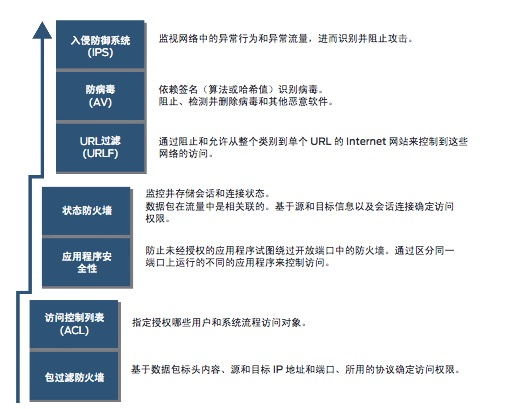

<!DOCTYPE HTML>
<html lang="" >
    <head>
        <meta charset="UTF-8">
        <meta content="text/html; charset=utf-8" http-equiv="Content-Type">
        <title>演进过程 · GitBook</title>
        <meta http-equiv="X-UA-Compatible" content="IE=edge" />
        <meta name="description" content="">
        <meta name="generator" content="GitBook 3.2.3">
        
        
        
    
    <link rel="stylesheet" href="../../gitbook/style.css">

    
            
                
                <link rel="stylesheet" href="../../gitbook/gitbook-plugin-anchors/plugin.css">
                
            
                
                <link rel="stylesheet" href="../../gitbook/gitbook-plugin-highlight/website.css">
                
            
                
                <link rel="stylesheet" href="../../gitbook/gitbook-plugin-search/search.css">
                
            
                
                <link rel="stylesheet" href="../../gitbook/gitbook-plugin-fontsettings/website.css">
                
            
        

    

    
        
    
        
    
        
    
        
    
        
    
        
    

        
    
    
    
    <meta name="HandheldFriendly" content="true"/>
    <meta name="viewport" content="width=device-width, initial-scale=1, user-scalable=no">
    <meta name="apple-mobile-web-app-capable" content="yes">
    <meta name="apple-mobile-web-app-status-bar-style" content="black">
    <link rel="apple-touch-icon-precomposed" sizes="152x152" href="../../gitbook/images/apple-touch-icon-precomposed-152.png">
    <link rel="shortcut icon" href="../../gitbook/images/favicon.ico" type="image/x-icon">

    
    <link rel="next" href="../../sdn/" />
    
    
    <link rel="prev" href="classify.html" />
    

    <style>
    @media only screen and (max-width: 640px) {
        .book-header .hidden-mobile {
            display: none;
        }
    }
    </style>
    <script>
        window["gitbook-plugin-github-buttons"] = {"buttons":[{"user":"tonydeng","repo":"sdn-handbook","type":"star","size":"small","count":true},{"user":"tonydeng","type":"follow","size":"small","width":"170","count":true},{"user":"tonydeng","repo":"sdn-handbook","type":"watch","size":"small","count":true}]};
    </script>

    </head>
    <body>
        
<div class="book">
    <div class="book-summary">
        
            
<div id="book-search-input" role="search">
    <input type="text" placeholder="Type to search" />
</div>

            
                <nav role="navigation">
                


<ul class="summary">
    
    

    

    
        
        
    
        <li class="chapter " data-level="1.1" data-path="../../">
            
                <a href="../../">
            
                    
                    1. 前言
            
                </a>
            

            
        </li>
    

    
        
        <li class="header">网络基础</li>
        
        
    
        <li class="chapter " data-level="2.1" data-path="../../basic/">
            
                <a href="../../basic/">
            
                    
                    2. 网络基础理论
            
                </a>
            

            
            <ul class="articles">
                
    
        <li class="chapter " data-level="2.1.1" data-path="../../basic/tcpip.html">
            
                <a href="../../basic/tcpip.html">
            
                    
                    TCP/IP网络模型
            
                </a>
            

            
        </li>
    
        <li class="chapter " data-level="2.1.2" data-path="../../basic/arp.html">
            
                <a href="../../basic/arp.html">
            
                    
                    ARP
            
                </a>
            

            
        </li>
    
        <li class="chapter " data-level="2.1.3" data-path="../../basic/icmp.html">
            
                <a href="../../basic/icmp.html">
            
                    
                    ICMP
            
                </a>
            

            
        </li>
    
        <li class="chapter " data-level="2.1.4" data-path="../../basic/route.html">
            
                <a href="../../basic/route.html">
            
                    
                    路由
            
                </a>
            

            
        </li>
    
        <li class="chapter " data-level="2.1.5" data-path="../../basic/switch.html">
            
                <a href="../../basic/switch.html">
            
                    
                    交换机
            
                </a>
            

            
        </li>
    
        <li class="chapter " data-level="2.1.6" data-path="../../basic/udp.html">
            
                <a href="../../basic/udp.html">
            
                    
                    UDP
            
                </a>
            

            
        </li>
    
        <li class="chapter " data-level="2.1.7" data-path="../../basic/dhcp.html">
            
                <a href="../../basic/dhcp.html">
            
                    
                    DHCP/DNS
            
                </a>
            

            
        </li>
    
        <li class="chapter " data-level="2.1.8" data-path="../../basic/tcp.html">
            
                <a href="../../basic/tcp.html">
            
                    
                    TCP
            
                </a>
            

            
        </li>
    
        <li class="chapter " data-level="2.1.9" data-path="../../basic/vlan.html">
            
                <a href="../../basic/vlan.html">
            
                    
                    VLAN
            
                </a>
            

            
        </li>
    
        <li class="chapter " data-level="2.1.10" data-path="../../basic/overlay.html">
            
                <a href="../../basic/overlay.html">
            
                    
                    Overlay
            
                </a>
            

            
        </li>
    
        <li class="chapter " data-level="2.1.11" data-path="../../basic/snmp.html">
            
                <a href="../../basic/snmp.html">
            
                    
                    SNMP
            
                </a>
            

            
        </li>
    
        <li class="chapter " data-level="2.1.12" data-path="../../basic/lldp.html">
            
                <a href="../../basic/lldp.html">
            
                    
                    LLDP
            
                </a>
            

            
        </li>
    

            </ul>
            
        </li>
    
        <li class="chapter " data-level="2.2" data-path="../../linux/">
            
                <a href="../../linux/">
            
                    
                    3. Linux网络
            
                </a>
            

            
            <ul class="articles">
                
    
        <li class="chapter " data-level="2.2.1" data-path="../../linux/config.html">
            
                <a href="../../linux/config.html">
            
                    
                    Linux网络配置
            
                </a>
            

            
            <ul class="articles">
                
    
        <li class="chapter " data-level="2.2.1.1" data-path="../../linux/virtual-device.html">
            
                <a href="../../linux/virtual-device.html">
            
                    
                    虚拟网络设备
            
                </a>
            

            
        </li>
    

            </ul>
            
        </li>
    
        <li class="chapter " data-level="2.2.2" data-path="../../linux/iptables.html">
            
                <a href="../../linux/iptables.html">
            
                    
                    iptables/netfilter
            
                </a>
            

            
        </li>
    
        <li class="chapter " data-level="2.2.3" data-path="../../linux/loadbalance.html">
            
                <a href="../../linux/loadbalance.html">
            
                    
                    负载均衡
            
                </a>
            

            
        </li>
    
        <li class="chapter " data-level="2.2.4" data-path="../../linux/tc.html">
            
                <a href="../../linux/tc.html">
            
                    
                    流量控制
            
                </a>
            

            
        </li>
    
        <li class="chapter " data-level="2.2.5" data-path="../../linux/sr-iov.html">
            
                <a href="../../linux/sr-iov.html">
            
                    
                    SR-IOV
            
                </a>
            

            
        </li>
    
        <li class="chapter " data-level="2.2.6" data-path="../../linux/vrf.html">
            
                <a href="../../linux/vrf.html">
            
                    
                    内核VRF
            
                </a>
            

            
        </li>
    
        <li class="chapter " data-level="2.2.7" data-path="../../linux/bpf/">
            
                <a href="../../linux/bpf/">
            
                    
                    eBPF
            
                </a>
            

            
            <ul class="articles">
                
    
        <li class="chapter " data-level="2.2.7.1" data-path="../../linux/bpf/bcc.html">
            
                <a href="../../linux/bpf/bcc.html">
            
                    
                    bcc
            
                </a>
            

            
        </li>
    
        <li class="chapter " data-level="2.2.7.2" data-path="../../linux/bpf/troubleshooting.html">
            
                <a href="../../linux/bpf/troubleshooting.html">
            
                    
                    故障排查
            
                </a>
            

            
        </li>
    

            </ul>
            
        </li>
    
        <li class="chapter " data-level="2.2.8" data-path="../../linux/XDP/">
            
                <a href="../../linux/XDP/">
            
                    
                    XDP
            
                </a>
            

            
            <ul class="articles">
                
    
        <li class="chapter " data-level="2.2.8.1" data-path="../../linux/XDP/design.html">
            
                <a href="../../linux/XDP/design.html">
            
                    
                    XDP架构
            
                </a>
            

            
        </li>
    
        <li class="chapter " data-level="2.2.8.2" data-path="../../linux/XDP/use-cases.html">
            
                <a href="../../linux/XDP/use-cases.html">
            
                    
                    使用场景
            
                </a>
            

            
        </li>
    

            </ul>
            
        </li>
    
        <li class="chapter " data-level="2.2.9" data-path="../../linux/tools.html">
            
                <a href="../../linux/tools.html">
            
                    
                    常用工具
            
                </a>
            

            
            <ul class="articles">
                
    
        <li class="chapter " data-level="2.2.9.1" data-path="../../linux/tcpdump.html">
            
                <a href="../../linux/tcpdump.html">
            
                    
                    网络抓包tcpdump
            
                </a>
            

            
        </li>
    
        <li class="chapter " data-level="2.2.9.2" data-path="../../linux/scapy.html">
            
                <a href="../../linux/scapy.html">
            
                    
                    scapy
            
                </a>
            

            
        </li>
    

            </ul>
            
        </li>
    
        <li class="chapter " data-level="2.2.10" data-path="../../linux/kernel-network-params.html">
            
                <a href="../../linux/kernel-network-params.html">
            
                    
                    内核网络参数
            
                </a>
            

            
        </li>
    

            </ul>
            
        </li>
    
        <li class="chapter " data-level="2.3" data-path="../../ovs/">
            
                <a href="../../ovs/">
            
                    
                    4. Open vSwitch
            
                </a>
            

            
            <ul class="articles">
                
    
        <li class="chapter " data-level="2.3.1" data-path="../../ovs/">
            
                <a href="../../ovs/">
            
                    
                    OVS介绍
            
                </a>
            

            
        </li>
    
        <li class="chapter " data-level="2.3.2" data-path="../../ovs/build.html">
            
                <a href="../../ovs/build.html">
            
                    
                    OVS编译
            
                </a>
            

            
        </li>
    
        <li class="chapter " data-level="2.3.3" data-path="../../ovs/internal.html">
            
                <a href="../../ovs/internal.html">
            
                    
                    OVS原理
            
                </a>
            

            
        </li>
    
        <li class="chapter " data-level="2.3.4" data-path="../../ovs/ovn.html">
            
                <a href="../../ovs/ovn.html">
            
                    
                    Open Virtual Network
            
                </a>
            

            
            <ul class="articles">
                
    
        <li class="chapter " data-level="2.3.4.1" data-path="../../ovs/ovn-ubuntu.html">
            
                <a href="../../ovs/ovn-ubuntu.html">
            
                    
                    OVN在Ubuntu编译
            
                </a>
            

            
        </li>
    
        <li class="chapter " data-level="2.3.4.2" data-path="../../ovs/ovn-internal.html">
            
                <a href="../../ovs/ovn-internal.html">
            
                    
                    OVN实践
            
                </a>
            

            
        </li>
    
        <li class="chapter " data-level="2.3.4.3" data-path="../../ovs/ovn-ha.html">
            
                <a href="../../ovs/ovn-ha.html">
            
                    
                    OVN高可用
            
                </a>
            

            
        </li>
    
        <li class="chapter " data-level="2.3.4.4" data-path="../../ovs/ovn-kubernetes.html">
            
                <a href="../../ovs/ovn-kubernetes.html">
            
                    
                    OVN Kubernetes插件
            
                </a>
            

            
        </li>
    
        <li class="chapter " data-level="2.3.4.5" data-path="../../ovs/ovn-docker.html">
            
                <a href="../../ovs/ovn-docker.html">
            
                    
                    OVN Docker插件
            
                </a>
            

            
        </li>
    
        <li class="chapter " data-level="2.3.4.6" data-path="../../ovs/ovn-openstack.html">
            
                <a href="../../ovs/ovn-openstack.html">
            
                    
                    OVN OpenStack
            
                </a>
            

            
        </li>
    

            </ul>
            
        </li>
    

            </ul>
            
        </li>
    
        <li class="chapter " data-level="2.4" data-path="../../dpdk/">
            
                <a href="../../dpdk/">
            
                    
                    5. DPDK
            
                </a>
            

            
            <ul class="articles">
                
    
        <li class="chapter " data-level="2.4.1" data-path="../../dpdk/introduction.html">
            
                <a href="../../dpdk/introduction.html">
            
                    
                    DPDK简介
            
                </a>
            

            
        </li>
    
        <li class="chapter " data-level="2.4.2" data-path="../../dpdk/install.html">
            
                <a href="../../dpdk/install.html">
            
                    
                    DPDK安装
            
                </a>
            

            
        </li>
    
        <li class="chapter " data-level="2.4.3" data-path="../../dpdk/forwarding.html">
            
                <a href="../../dpdk/forwarding.html">
            
                    
                    报文转发模型
            
                </a>
            

            
        </li>
    
        <li class="chapter " data-level="2.4.4" data-path="../../dpdk/numa.html">
            
                <a href="../../dpdk/numa.html">
            
                    
                    NUMA
            
                </a>
            

            
        </li>
    
        <li class="chapter " data-level="2.4.5" data-path="../../dpdk/ivshmem.html">
            
                <a href="../../dpdk/ivshmem.html">
            
                    
                    Ring和共享内存
            
                </a>
            

            
        </li>
    
        <li class="chapter " data-level="2.4.6" data-path="../../dpdk/PCIe.html">
            
                <a href="../../dpdk/PCIe.html">
            
                    
                    PCIe
            
                </a>
            

            
        </li>
    
        <li class="chapter " data-level="2.4.7" data-path="../../dpdk/hardware.html">
            
                <a href="../../dpdk/hardware.html">
            
                    
                    网卡性能优化
            
                </a>
            

            
        </li>
    
        <li class="chapter " data-level="2.4.8" data-path="../../dpdk/queue.html">
            
                <a href="../../dpdk/queue.html">
            
                    
                    多队列
            
                </a>
            

            
        </li>
    
        <li class="chapter " data-level="2.4.9" data-path="../../dpdk/offload.html">
            
                <a href="../../dpdk/offload.html">
            
                    
                    硬件offload
            
                </a>
            

            
        </li>
    
        <li class="chapter " data-level="2.4.10" data-path="../../dpdk/io-virtualization.html">
            
                <a href="../../dpdk/io-virtualization.html">
            
                    
                    虚拟化
            
                </a>
            

            
        </li>
    
        <li class="chapter " data-level="2.4.11" data-path="../../dpdk/ovs-dpdk.html">
            
                <a href="../../dpdk/ovs-dpdk.html">
            
                    
                    OVS DPDK
            
                </a>
            

            
        </li>
    
        <li class="chapter " data-level="2.4.12" data-path="../../dpdk/spdk.html">
            
                <a href="../../dpdk/spdk.html">
            
                    
                    SPDK
            
                </a>
            

            
        </li>
    
        <li class="chapter " data-level="2.4.13" data-path="../../dpdk/OpenFastPath.md">
            
                <span>
            
                    
                    OpenFastPath
            
                </a>
            

            
        </li>
    

            </ul>
            
        </li>
    
        <li class="chapter " data-level="2.5" data-path="../">
            
                <a href="../">
            
                    
                    6. 安全设备
            
                </a>
            

            
            <ul class="articles">
                
    
        <li class="chapter " data-level="2.5.1" data-path="../vpn/">
            
                <a href="../vpn/">
            
                    
                    VPN
            
                </a>
            

            
            <ul class="articles">
                
    
        <li class="chapter " data-level="2.5.1.1" data-path="../vpn/ipsecvpn.html">
            
                <a href="../vpn/ipsecvpn.html">
            
                    
                    IPSec VPN
            
                </a>
            

            
        </li>
    
        <li class="chapter " data-level="2.5.1.2" data-path="../vpn/sslvpn.html">
            
                <a href="../vpn/sslvpn.html">
            
                    
                    SSL VPN
            
                </a>
            

            
        </li>
    

            </ul>
            
        </li>
    
        <li class="chapter " data-level="2.5.2" data-path="../icg/">
            
                <a href="../icg/">
            
                    
                    ICG
            
                </a>
            

            
        </li>
    
        <li class="chapter " data-level="2.5.3" data-path="./">
            
                <a href="./">
            
                    
                    Firewall
            
                </a>
            

            
            <ul class="articles">
                
    
        <li class="chapter " data-level="2.5.3.1" data-path="principle.html">
            
                <a href="principle.html">
            
                    
                    工作原理
            
                </a>
            

            
        </li>
    
        <li class="chapter " data-level="2.5.3.2" data-path="classify.html">
            
                <a href="classify.html">
            
                    
                    常见分类
            
                </a>
            

            
        </li>
    
        <li class="chapter active" data-level="2.5.3.3" data-path="evolution.html">
            
                <a href="evolution.html">
            
                    
                    演进过程
            
                </a>
            

            
        </li>
    

            </ul>
            
        </li>
    

            </ul>
            
        </li>
    

    
        
        <li class="header">SDN&NFV</li>
        
        
    
        <li class="chapter " data-level="3.1" data-path="../../sdn/">
            
                <a href="../../sdn/">
            
                    
                    7. SDN
            
                </a>
            

            
            <ul class="articles">
                
    
        <li class="chapter " data-level="3.1.1" data-path="../../sdn/yang-language.html">
            
                <a href="../../sdn/yang-language.html">
            
                    
                    YANG Language
            
                </a>
            

            
        </li>
    
        <li class="chapter " data-level="3.1.2" data-path="../../sdn/controller/">
            
                <a href="../../sdn/controller/">
            
                    
                    SDN控制器
            
                </a>
            

            
            <ul class="articles">
                
    
        <li class="chapter " data-level="3.1.2.1" data-path="../../sdn/controller/odl/">
            
                <a href="../../sdn/controller/odl/">
            
                    
                    OpenDaylight
            
                </a>
            

            
            <ul class="articles">
                
    
        <li class="chapter " data-level="3.1.2.1.1" data-path="../../sdn/controller/odl/projects.html">
            
                <a href="../../sdn/controller/odl/projects.html">
            
                    
                    OpenDaylight Projects
            
                </a>
            

            
        </li>
    
        <li class="chapter " data-level="3.1.2.1.2" data-path="../../sdn/controller/odl/datastore.html">
            
                <a href="../../sdn/controller/odl/datastore.html">
            
                    
                    DataStore
            
                </a>
            

            
        </li>
    

            </ul>
            
        </li>
    
        <li class="chapter " data-level="3.1.2.2" data-path="../../sdn/controller/onos.html">
            
                <a href="../../sdn/controller/onos.html">
            
                    
                    ONOS
            
                </a>
            

            
        </li>
    
        <li class="chapter " data-level="3.1.2.3" data-path="../../sdn/controller/floodlight.html">
            
                <a href="../../sdn/controller/floodlight.html">
            
                    
                    Floodlight
            
                </a>
            

            
        </li>
    
        <li class="chapter " data-level="3.1.2.4" data-path="../../sdn/controller/ryu.html">
            
                <a href="../../sdn/controller/ryu.html">
            
                    
                    Ryu
            
                </a>
            

            
        </li>
    
        <li class="chapter " data-level="3.1.2.5" data-path="../../sdn/controller/pox.html">
            
                <a href="../../sdn/controller/pox.html">
            
                    
                    NOX/POX
            
                </a>
            

            
        </li>
    

            </ul>
            
        </li>
    
        <li class="chapter " data-level="3.1.3" data-path="../../sdn/sbi/README.md">
            
                <span>
            
                    
                    南向接口
            
                </a>
            

            
            <ul class="articles">
                
    
        <li class="chapter " data-level="3.1.3.1" data-path="../../sdn/sbi/openflow.html">
            
                <a href="../../sdn/sbi/openflow.html">
            
                    
                    OpenFlow
            
                </a>
            

            
        </li>
    
        <li class="chapter " data-level="3.1.3.2" data-path="../../sdn/sbi/of-config.html">
            
                <a href="../../sdn/sbi/of-config.html">
            
                    
                    OF-Config
            
                </a>
            

            
        </li>
    
        <li class="chapter " data-level="3.1.3.3" data-path="../../sdn/sbi/netconf.html">
            
                <a href="../../sdn/sbi/netconf.html">
            
                    
                    NETCONF
            
                </a>
            

            
            <ul class="articles">
                
    
        <li class="chapter " data-level="3.1.3.3.1" data-path="../../sdn/sbi/netconf-call-home.html">
            
                <a href="../../sdn/sbi/netconf-call-home.html">
            
                    
                    NETCONF Call Home
            
                </a>
            

            
        </li>
    
        <li class="chapter " data-level="3.1.3.3.2" data-path="../../sdn/sbi/yang-module-for-netconf-monitoring.html">
            
                <a href="../../sdn/sbi/yang-module-for-netconf-monitoring.html">
            
                    
                    YANG Module for NETCONF Monitoring
            
                </a>
            

            
        </li>
    
        <li class="chapter " data-level="3.1.3.3.3" data-path="../../sdn/sbi/netconf-tags.html">
            
                <a href="../../sdn/sbi/netconf-tags.html">
            
                    
                    NETCONF请求和响应中的标签
            
                </a>
            

            
        </li>
    

            </ul>
            
        </li>
    
        <li class="chapter " data-level="3.1.3.4" data-path="../../sdn/sbi/p4.html">
            
                <a href="../../sdn/sbi/p4.html">
            
                    
                    P4
            
                </a>
            

            
        </li>
    
        <li class="chapter " data-level="3.1.3.5" data-path="../../sdn/aaa/README.md">
            
                <span>
            
                    
                    AAA
            
                </a>
            

            
            <ul class="articles">
                
    
        <li class="chapter " data-level="3.1.3.5.1" data-path="../../sdn/aaa/radius.html">
            
                <a href="../../sdn/aaa/radius.html">
            
                    
                    Radius
            
                </a>
            

            
        </li>
    

            </ul>
            
        </li>
    

            </ul>
            
        </li>
    
        <li class="chapter " data-level="3.1.4" data-path="../../sdn/dataplane.html">
            
                <a href="../../sdn/dataplane.html">
            
                    
                    数据平面
            
                </a>
            

            
        </li>
    

            </ul>
            
        </li>
    
        <li class="chapter " data-level="3.2" data-path="../../nfv/">
            
                <a href="../../nfv/">
            
                    
                    8. NFV
            
                </a>
            

            
        </li>
    
        <li class="chapter " data-level="3.3" data-path="../../sdwan/">
            
                <a href="../../sdwan/">
            
                    
                    9. SDWAN
            
                </a>
            

            
        </li>
    

    
        
        <li class="header">SDN实践</li>
        
        
    
        <li class="chapter " data-level="4.1" data-path="../../mininet/">
            
                <a href="../../mininet/">
            
                    
                    11. Mininet
            
                </a>
            

            
        </li>
    
        <li class="chapter " data-level="4.2" data-path="../../neutron/">
            
                <a href="../../neutron/">
            
                    
                    12. Neutron
            
                </a>
            

            
        </li>
    
        <li class="chapter " data-level="4.3" data-path="../../practice/READMEmd">
            
                <span>
            
                    
                    13. SDN实践案例
            
                </a>
            

            
            <ul class="articles">
                
    
        <li class="chapter " data-level="4.3.1" data-path="../../practice/google.html">
            
                <a href="../../practice/google.html">
            
                    
                    Google数据中心网络
            
                </a>
            

            
        </li>
    

            </ul>
            
        </li>
    

    
        
        <li class="header">SDN业务类型示例</li>
        
        
    
        <li class="chapter " data-level="5.1" data-path="../../sample/">
            
                <a href="../../sample/">
            
                    
                    14. 业务示例
            
                </a>
            

            
            <ul class="articles">
                
    
        <li class="chapter " data-level="5.1.1" data-path="../../sample/application-scenarios.html">
            
                <a href="../../sample/application-scenarios.html">
            
                    
                    SDN控制器应用场景
            
                </a>
            

            
        </li>
    
        <li class="chapter " data-level="5.1.2" data-path="../../sample/scp.html">
            
                <a href="../../sample/scp.html">
            
                    
                    业务控制平台-SCP
            
                </a>
            

            
        </li>
    

            </ul>
            
        </li>
    

    
        
        <li class="header">参考文档</li>
        
        
    
        <li class="chapter " data-level="6.1" data-path="../../FAQ.html">
            
                <a href="../../FAQ.html">
            
                    
                    15. FAQ
            
                </a>
            

            
        </li>
    
        <li class="chapter " data-level="6.2" data-path="../../reference.html">
            
                <a href="../../reference.html">
            
                    
                    16. 参考文档
            
                </a>
            

            
        </li>
    

    
        
        <li class="header">ChangeLog</li>
        
        
    
        <li class="chapter " data-level="7.1" data-path="../../CHANGELOG.html">
            
                <a href="../../CHANGELOG.html">
            
                    
                    ChangeLog
            
                </a>
            

            
        </li>
    

    

    <li class="divider"></li>

    <li>
        <a href="https://www.gitbook.com" target="blank" class="gitbook-link">
            Published with GitBook
        </a>
    </li>
</ul>


                </nav>
            
        
    </div>

    <div class="book-body">
        
            <div class="body-inner">
                
                    

<div class="book-header" role="navigation">
    

    <!-- Title -->
    <h1>
        <i class="fa fa-circle-o-notch fa-spin"></i>
        <a href="../.." >演进过程</a>
    </h1>
</div>


                    <div class="page-wrapper" tabindex="-1" role="main">
                        <div class="page-inner">
                            
<div id="book-search-results">
    <div class="search-noresults">
    
                                <section class="normal markdown-section">
                                
                                <h1 id="&#x9632;&#x706B;&#x5899;&#x6F14;&#x8FDB;&#x8FC7;&#x7A0B;"><a name="&#x9632;&#x706B;&#x5899;&#x6F14;&#x8FDB;&#x8FC7;&#x7A0B;" class="plugin-anchor" href="#&#x9632;&#x706B;&#x5899;&#x6F14;&#x8FDB;&#x8FC7;&#x7A0B;"><i class="fa fa-link" aria-hidden="true"></i></a>&#x9632;&#x706B;&#x5899;&#x6F14;&#x8FDB;&#x8FC7;&#x7A0B;</h1>
<p></p>
<p>&#x9632;&#x706B;&#x5899;&#x73B0;&#x5728;&#x53EF;&#x4EE5;&#x4E3A;&#x6211;&#x4EEC;&#x63D0;&#x4F9B;&#x5F3A;&#x5927;&#x6DF1;&#x539A;&#x7684;&#x5B89;&#x5168;&#x548C;&#x9AD8;&#x7EA7;&#x529F;&#x80FD;&#xFF0C;&#x8FD9;&#x662F;&#x600E;&#x6837;&#x7684;&#x4E00;&#x4E2A;&#x53D1;&#x5C55;&#x8FC7;&#x7A0B;&#x5462;&#xFF1F;&#x8FD9;&#x662F;&#x4E00;&#x4E2A;&#x5F88;&#x957F;&#x7684;&#x6545;&#x4E8B;&#xFF0C;&#x4F46;&#x5374;&#x53D1;&#x751F;&#x5728;&#x4E00;&#x6BB5;&#x76F8;&#x5BF9;&#x8F83;&#x77ED;&#x7684;&#x65F6;&#x95F4;&#x5185;&#xFF0C;&#x5F88;&#x53EF;&#x80FD;&#x60A8;&#x4E5F;&#x662F;&#x8FD9;&#x6BB5;&#x6545;&#x4E8B;&#x7684;&#x89C1;&#x8BC1;&#x8005;&#x3002;</p>
<p>&#x4E8C;&#x5341;&#x4E16;&#x7EAA;&#x4E03;&#x5341;&#x5E74;&#x4EE3;&#x665A;&#x671F; &#xFF0C;&#x5C40;&#x57DF;&#x7F51;(<code>LAN</code>) &#x548C;&#x8FDE;&#x63A5;&#x7CFB;&#x7EDF;&#x9762;&#x4E16;&#xFF0C;&#x56E0;&#x6B64;&#x516C;&#x53F8;&#x80FD;&#x8BA9;&#x5458;&#x5DE5;&#x5F7C;&#x6B64;&#x901A;&#x4FE1; &#xFF0C;&#x4E5F;&#x80FD;&#x901A;&#x8FC7;&#x7F51;&#x7EDC;&#x4F20;&#x9001;&#x6570;&#x636E; &#x3002;</p>
<p><code>LAN</code>&#x5B9E;&#x73B0;&#x4E86;&#x5C40;&#x95F4;&#x8FDB;&#x884C;&#x7535;&#x5B50;&#x901A;&#x4FE1;&#xFF0C;&#x4E5F;&#x5C31;&#x662F;&#x7535;&#x5B50;&#x90AE;&#x4EF6;&#x3002;&#x5BF9;&#x516C;&#x53F8;&#x800C;&#x8A00;&#xFF0C;&#x8BE5;&#x7F51;&#x7EDC;&#x662F;&#x672C;&#x5730;&#x7684;&#x3001;&#x79C1;&#x6709;&#x4E14;&#x4E13;&#x5C5E;&#x7684;&#xFF0C;&#x5B83;&#x652F;&#x6301;&#x6709;&#x9650;&#x6570;&#x91CF;&#x7684;&#x7528;&#x6237;&#x3002;<code>LAN</code>&#x7684;&#x5B89;&#x5168;&#x539F;&#x5219;&#x5F62;&#x5F0F;&#x662F;&#x5BC6;&#x7801;&#x4FDD;&#x62A4;&#x3002;</p>
<p>&#x5230; &#x4E86;&#x4E8C;&#x5341;&#x4E16;&#x7EAA;&#x516B;&#x5341;&#x5E74;&#x4EE3;&#x521D;&#xFF0C;&#x63A8;&#x51FA;&#x4E86;&#x591A;&#x534F;&#x8BAE;&#x8DEF;&#x7531;&#x5668; &#xFF0C;&#x7528; &#x4E8E;&#x4E92;&#x8FDE;&#x4E0D;&#x540C;&#x7684;&#x7F51;&#x7EDC;&#x5E76;&#x5B9A;&#x5411;&#x8FD9;&#x4E9B;&#x7F51;&#x7EDC;&#x4E4B;&#x95F4;&#x7684;&#x6D41;&#x91CF;&#x3002;&#x6709;&#x4E86;&#x8DEF;&#x7531;&#x5668;&#x548C;&#x5176;&#x4ED6;<code>Internet</code>&#x6280;&#x672F;&#x540E;&#xFF0C;&#x5168;&#x7403;&#x7535;&#x5B50;&#x53D1;&#x5C55;&#x52A8;&#x5411;&#x5C3D;&#x5728;&#x8BA1;&#x7B97;&#x673A;&#x7528;&#x6237;&#x7684;&#x638C;&#x63E1;&#x4E4B;&#x4E2D;&#x3002;&#x8DEF;&#x7531;&#x5668;&#x7528;&#x6765;&#x5B9A;&#x5411;&#x901A;&#x8FC7;<code>Internet</code>&#x7684;&#x6D41;&#x91CF;&#xFF0C;&#x8FD8;&#x5305;&#x62EC;&#x8BBF;&#x95EE;&#x63A7;&#x5236;&#x8F6F;&#x4EF6;&#x6765;&#x4FDD;&#x62A4;&#x4E1A;&#x52A1;&#x4F20;&#x8F93;&#x548C;&#x6570;&#x636E;&#x8BBF;&#x95EE;&#x3002;</p>
<p>&#x4F46;&#x662F;&#x8DEF;&#x7531;&#x5668;&#x65E0;&#x6CD5;&#x63D0;&#x4F9B;&#x5FC5;&#x9700;&#x7684;&#x5B89;&#x5168;&#x6027;&#xFF0C;&#x56E0;&#x6B64;&#x65E0;&#x6CD5;&#x5E94;&#x5BF9;<code>Internet</code>&#x8FDE;&#x63A5;&#x5E26;&#x6765;&#x7684;&#x6311;&#x6218;&#x3002;&#x5168;&#x7403;&#x901A;&#x4FE1;&#x4E3A;&#x9ED1;&#x5BA2;&#x63D0;&#x4F9B;&#x4E86;&#x5165;&#x4FB5;&#x8FDE;&#x63A5;&#x4F01;&#x4E1A;&#x548C;&#x4E2A;&#x4EBA;&#x7535;&#x8111;&#x7684;&#x673A;&#x4F1A;&#xFF0C;&#x4ED6;&#x4EEC;&#x5F88;&#x5FEB;&#x5C31;&#x4F1A;&#x8FDB;&#x5165;&#x79C1;&#x4EBA;&#x5E10;&#x6237;&#x3002;&#x4E3A;&#x627E;&#x5230;&#x8FD9;&#x4E9B;&#x9ED1;&#x5BA2;&#x800C;&#x6267;&#x884C;&#x7684;&#x63A2;&#x6D4B;&#x4EFB;&#x52A1;&#xFF0C;&#x8FCE;&#x6765;&#x4E86;&#x8BA1;&#x7B97;&#x673A;&#x76F8;&#x5173;&#x79D1;&#x5B66;&#xFF08;&#x79F0;&#x4E3A;&#x6570;&#x5B57;&#x53D6;&#x8BC1;&#xFF09;&#x7684;&#x53D1;&#x5C55;&#x3002;&#x8D8A;&#x6765;&#x8D8A;&#x591A;&#x7684;&#x5B89;&#x5168;&#x95EE;&#x9898;&#x63A8;&#x52A8;&#x4E86;&#x8BA1;&#x7B97;&#x673A;&#x7F51;&#x7EDC;&#x5B89;&#x5168;&#x7684;&#x53D1;&#x5C55;&#xFF0C;&#x4FC3;&#x4F7F;&#x4EA7;&#x751F;&#x4E86;&#x7B2C;&#x4E00;&#x4E2A;&#x7F51;&#x7EDC;&#x9632;&#x706B;&#x5899;&#x3002;&#x8FD9;&#x4E9B;&#x9632;&#x706B;&#x5899;&#x57FA;&#x4E8E;&#x7B56;&#x7565;&#x5141;&#x8BB8;&#x6216;&#x963B;&#x6B62;&#x6D41;&#x91CF;&#x3002;&#x7F51;&#x7EDC;&#x9632;&#x706B;&#x5899;&#x5728;&#x7528;&#x9014;&#x4E0A;&#x4E0E;&#x7269;&#x7406;&#x9632;&#x706B;&#x5899;&#x76F8;&#x4F3C;&#xFF0C;&#x90FD;&#x662F;&#x7528;&#x6765;&#x904F;&#x5236;&#x653B;&#x51FB;&#x5E76;&#x9632;&#x6B62;&#x5B83;&#x4EEC;&#x8513;&#x5EF6;&#x3002;&#x8BA1;&#x7B97;&#x673A;&#x7F51;&#x7EDC;&#x9632;&#x706B;&#x5899;&#x5728;&#x5185;&#x90E8;&#x7F51;&#x7EDC;&#x4E0E;&#x5916;&#x90E8;&#x7F51;&#x7EDC;&#x4E4B;&#x95F4;&#x7AD6;&#x8D77;&#x4E00;&#x9053;&#x5C4F;&#x969C;&#xFF0C;&#x524D;&#x8005;&#x662F;&#x5728;&#x516C;&#x53F8;&#x5185;&#x90E8;&#x5E76;&#x88AB;&#x89C6;&#x4E3A;&#x53EF;&#x4FE1;&#xFF0C;&#x540E;&#x8005;&#x88AB;&#x8BA4;&#x4E3A;&#x4E0D;&#x53EF;&#x4FE1;&#xFF0C;&#x4F8B;&#x5982;<code>Internet</code></p>
<h2 id="&#x7B2C;&#x4E00;&#x4EE3;&#x9632;&#x706B;&#x5899;&#xFF1A;&#x5305;&#x8FC7;&#x6EE4;&#x9632;&#x706B;&#x5899;"><a name="&#x7B2C;&#x4E00;&#x4EE3;&#x9632;&#x706B;&#x5899;&#xFF1A;&#x5305;&#x8FC7;&#x6EE4;&#x9632;&#x706B;&#x5899;" class="plugin-anchor" href="#&#x7B2C;&#x4E00;&#x4EE3;&#x9632;&#x706B;&#x5899;&#xFF1A;&#x5305;&#x8FC7;&#x6EE4;&#x9632;&#x706B;&#x5899;"><i class="fa fa-link" aria-hidden="true"></i></a>&#x7B2C;&#x4E00;&#x4EE3;&#x9632;&#x706B;&#x5899;&#xFF1A;&#x5305;&#x8FC7;&#x6EE4;&#x9632;&#x706B;&#x5899;</h2>
<p>&#x7B2C;&#x4E00;&#x4EE3;&#x9632;&#x706B;&#x5899;&#x662F;&#x76F8;&#x5BF9;&#x7B80;&#x5355;&#x7684;&#x8FC7;&#x6EE4;&#x7CFB;&#x7EDF;&#xFF0C;&#x88AB;&#x79F0;&#x4E3A;&#x5305;&#x8FC7;&#x6EE4;&#x9632;&#x706B;&#x5899;&#xFF0C;&#x4F46;&#x53D1;&#x5C55;&#x5230;&#x4ECA;&#x5929;&#xFF0C;&#x5B83;&#x4EEC;&#x5DF2;&#x6210;&#x4E3A;&#x9AD8;&#x5EA6;&#x590D;&#x6742;&#x7684;&#x8BA1;&#x7B97;&#x673A;&#x7F51;&#x7EDC;&#x5B89;&#x5168;&#x6280;&#x672F;&#x3002;</p>
<p>&#x5305;&#x8FC7;&#x6EE4;&#x9632;&#x706B;&#x5899;&#x4E5F;&#x79F0;&#x4E3A;<strong>&#x65E0;&#x72B6;&#x6001;&#x9632;&#x706B;&#x5899;</strong>&#xFF0C;&#x57FA;&#x4E8E;&#x8FC7;&#x6EE4;&#x89C4;&#x5219;&#x8FC7;&#x6EE4;&#x51FA;&#x548C;&#x4E22;&#x5F03;&#x6D41;&#x91CF;&#x3002;&#x5305;&#x8FC7;&#x6EE4;&#x9632;&#x706B;&#x5899;&#x4E0D;&#x4FDD;&#x6301;&#x8FDE;&#x63A5;&#x72B6;&#x6001;&#x3002;&#x4E5F;&#x5C31;&#x662F;&#x8BF4;&#xFF0C;<strong>&#x5C06;&#x4E00;&#x4E2A;&#x6570;&#x636E;&#x5305;&#x4F5C;&#x4E3A;&#x4E00;&#x4E2A;&#x539F;&#x5B50;&#x5355;&#x5143;&#x5904;&#x7406;&#xFF0C;&#x800C;&#x4E0D;&#x6D89;&#x53CA;&#x76F8;&#x5173;&#x7684;&#x6570;&#x636E;&#x5305;</strong>&#x3002;&#x5305;&#x8FC7;&#x6EE4;&#x9632;&#x706B;&#x5899;&#x901A;&#x5E38;&#x90E8;&#x7F72;&#x5728;&#x8DEF;&#x7531;&#x5668;&#x548C;&#x4EA4;&#x6362;&#x673A;&#x4E0A;&#x3002;</p>
<p>&#x5305;&#x8FC7;&#x6EE4;&#x7684;&#x6838;&#x5FC3;&#x5728;&#x4E8E;ACL&#x7684;&#x5B9A;&#x4E49;&#x3002;&#x800C;ACL&#x7684;&#x6838;&#x5FC3;&#x5176;&#x5B9E;&#x5C31;&#x662F;&#x4E00;&#x4E2A;&#x5178;&#x578B;&#x7684;&#x4E94;&#x5143;&#x7EC4;&#x3002;&#x901A;&#x5E38;&#x5728;&#x7B2C;3&#x5C42;&#x548C;&#x7B2C;4&#x5C42;&#x6267;&#x884C;&#x6570;&#x636E;&#x5305;&#x5904;&#x7406;&#xFF0C;&#x65B9;&#x6CD5;&#x5C31;&#x662F;&#x5BF9;&#x7167;<strong>&#x4E94;&#x5143;&#x7EC4;</strong>&#x5339;&#x914D;&#x6570;&#x636E;&#x5305;&#x7684;&#x6807;&#x5934;&#x5B57;&#x6BB5;&#xFF1A;</p>
<ul>
<li>&#x6E90;IP&#x5730;&#x5740;</li>
<li>&#x76EE;&#x7684;IP&#x5730;&#x5740;</li>
<li>&#x6E90;&#x7AEF;&#x53E3;</li>
<li>&#x76EE;&#x7684;&#x7AEF;&#x53E3;</li>
<li>&#x534F;&#x8BAE;&#x53F7;</li>
</ul>
<p>&#x4E0D;&#x4F1A;&#x5C06;&#x66F4;&#x9AD8;&#x5C42;&#x7684;&#x4FE1;&#x606F;&#x8003;&#x8651;&#x5728;&#x5185;&#x3002;</p>
<p>&#x5305;&#x8FC7;&#x6EE4;&#x9632;&#x706B;&#x5899;&#x7684;&#x4E3B;&#x8981;&#x5F31;&#x70B9;&#x662F;&#xFF0C;&#x9ED1;&#x5BA2;&#x53EF;&#x4EE5;&#x5229;&#x7528;&#x7F3A;&#x4E4F;&#x72B6;&#x6001;&#x8FD9;&#x4E00;&#x7F3A;&#x9677;&#x7CBE;&#x5FC3;&#x8BBE;&#x8BA1;&#x6570;&#x636E;&#x5305;&#x4EE5;&#x901A;&#x8FC7;&#x8FC7;&#x6EE4;&#x3002;&#x7B2C;&#x4E00;&#x6B21;&#x4F7F;&#x7528;&#x5305;&#x8FC7;&#x6EE4;&#x9632;&#x706B;&#x5899;&#x65F6;&#xFF0C;&#x64CD;&#x4F5C;&#x7CFB;&#x7EDF;&#x5806;&#x6808;&#x6613;&#x53D7;&#x653B;&#x51FB;&#xFF0C;&#x5355;&#x4E2A;&#x6570;&#x636E;&#x5305;&#x53EF;&#x80FD;&#x4F1A;&#x5BFC;&#x81F4;&#x7CFB;&#x7EDF;&#x5D29;&#x6E83;&#xFF0C;&#x4F46;&#x5728;&#x4ECA;&#x5929;&#x5F88;&#x5C11;&#x53D1;&#x751F;&#x8FD9;&#x79CD;&#x60C5;&#x51B5;&#x3002;</p>
<p>&#x5305;&#x8FC7;&#x6EE4;&#x9632;&#x706B;&#x5899;&#x5141;&#x8BB8;&#x6240;&#x6709;&#x57FA;&#x4E8E;<code>Web</code>&#x7684;&#x6D41;&#x91CF;&#x901A;&#x8FC7;&#x9632;&#x706B;&#x5899;&#xFF0C;&#x5305;&#x62EC;&#x57FA;&#x4E8E; <code>Web</code>&#x7684;&#x653B;&#x51FB;&#x3002;&#x8FD9;&#x4E9B;&#x9632;&#x706B;&#x5899;&#x65E0;&#x6CD5;&#x533A;&#x5206;&#x6709;&#x6548;&#x7684;&#x8FD4;&#x56DE;&#x6570;&#x636E;&#x5305;&#x548C;&#x5192;&#x540D;&#x9876;&#x66FF;&#x8FD4;&#x56DE;&#x7684;&#x6570;&#x636E;&#x5305;&#x3002;&#x5982;&#x4F55;&#x5904;&#x7406;&#x8FD9;&#x4E9B;&#x53CA;&#x5176;&#x4ED6;&#x7684;&#x7C7B;&#x4F3C;&#x95EE;&#x9898;&#xFF0C;&#x4E3A;&#x9632;&#x706B;&#x5899;&#x7684;&#x672A;&#x6765;&#x53D1;&#x5C55;&#x521B;&#x9020;&#x4E86;&#x6761;&#x4EF6;&#x3002;</p>
<blockquote>
<p>(1988) &#x7F8E;&#x56FD;&#x6570;&#x5B57;&#x8BBE;&#x5907;&#x516C;&#x53F8;&#xFF08;DEC&#xFF09;&#x5F00;&#x53D1;&#x51FA;&#x4E86;&#x9996;&#x6B3E;&#x65E0;&#x72B6;&#x6001;&#x5305;&#x8FC7;&#x6EE4;&#x9632;&#x706B;&#x5899;</p>
</blockquote>
<h2 id="&#x7B2C;&#x4E8C;&#x4EE3;&#x9632;&#x706B;&#x5899;&#xFF1A;&#x72B6;&#x6001;&#x9632;&#x706B;&#x5899;"><a name="&#x7B2C;&#x4E8C;&#x4EE3;&#x9632;&#x706B;&#x5899;&#xFF1A;&#x72B6;&#x6001;&#x9632;&#x706B;&#x5899;" class="plugin-anchor" href="#&#x7B2C;&#x4E8C;&#x4EE3;&#x9632;&#x706B;&#x5899;&#xFF1A;&#x72B6;&#x6001;&#x9632;&#x706B;&#x5899;"><i class="fa fa-link" aria-hidden="true"></i></a>&#x7B2C;&#x4E8C;&#x4EE3;&#x9632;&#x706B;&#x5899;&#xFF1A;&#x72B6;&#x6001;&#x9632;&#x706B;&#x5899;</h2>
<p>&#x5305;&#x8FC7;&#x6EE4;&#x9632;&#x706B;&#x5899;&#x51FA;&#x73B0;&#x540E;&#x4E0D;&#x4E45;&#x5C31;&#x51FA;&#x73B0;&#x4E86;&#x72B6;&#x6001;&#x9632;&#x706B;&#x5899;&#x3002;&#x7B2C;&#x4E8C;&#x4EE3;&#x9632;&#x706B;&#x5899;&#x5177;&#x6709;&#x4E0E;&#x5305;&#x8FC7;&#x6EE4;&#x9632;&#x706B;&#x5899;&#x76F8;&#x540C;&#x7684;&#x529F;&#x80FD;&#xFF0C;&#x4F46;&#x5B83;&#x4EEC;&#x53EF;&#x4EE5;&#x76D1;&#x63A7;&#x548C;&#x5B58;&#x50A8;&#x4F1A;&#x8BDD;&#x3001;&#x8FDE;&#x63A5;&#x72B6;&#x6001;&#x3002;&#x7B2C;&#x4E8C;&#x4EE3;&#x9632;&#x706B;&#x5899;&#x57FA;&#x4E8E;&#x6E90;&#x548C;&#x76EE;&#x6807;IP&#x5730;&#x5740;&#x3001;&#x6E90;&#x548C;&#x76EE;&#x6807;&#x7AEF;&#x53E3;&#x4EE5;&#x53CA;&#x6240;&#x7528;&#x7684;&#x534F;&#x8BAE;&#x5C06;&#x6D41;&#x91CF;&#x4E2D;&#x7684;&#x76F8;&#x5173;&#x6570;&#x636E;&#x5305;&#x5173;&#x8054;&#x8D77;&#x6765;&#x3002;&#x5982;&#x679C;&#x6709;&#x6570;&#x636E;&#x5305;<strong>&#x53CC;&#x5411;&#x5339;&#x914D;</strong>&#x8FD9;&#x4E9B;&#x4FE1;&#x606F;&#xFF0C;&#x90A3;&#x4E48;&#x5B83;&#x5C31;&#x5C5E;&#x4E8E;&#x8BE5;&#x6D41;&#x91CF;&#x3002;</p>
<p>&#x968F;&#x7740;<code>Internet</code>&#x7684;&#x5E7F;&#x6CDB;&#x4F7F;&#x7528;&#xFF0C;&#x4F01;&#x4E1A;&#x9010;&#x6E10;&#x9AD8;&#x5EA6;&#x7F51;&#x7EDC;&#x5316;&#xFF0C;&#x4ED6;&#x4EEC;&#x53EF;&#x4EE5;&#x6709;&#x9009;&#x62E9;&#x5730;&#x4E3A;&#x7528;&#x6237;&#x63D0;&#x4F9B;<code>Internet</code>&#x670D;&#x52A1;&#xFF0C;&#x4F46;&#x524D;&#x63D0;&#x662F;&#x4ED6;&#x4EEC;&#x80FD;&#x591F;&#x4FDD;&#x62A4;&#x81EA;&#x5DF1;&#x7684;&#x8D44;&#x4EA7;&#x514D;&#x53D7;&#x4ECE; <code>LAN</code>&#x5916;&#x90E8;&#x53D1;&#x8D77;&#x7684;&#x5165;&#x4FB5;&#x548C;&#x653B;&#x51FB;&#x3002;&#x4F01;&#x4E1A;&#x8FD8;&#x60F3;&#x9632;&#x6B62;&#x5458;&#x5DE5;&#x548C;&#x5176;&#x4ED6;&#x4F01;&#x4E1A;&#x4EBA;&#x5458;&#xFF08;&#x4F8B;&#x5982;&#x627F;&#x5305;&#x5546;&#x53CA;&#x5408;&#x4F5C;&#x4F19;&#x4F34;&#xFF09;&#x5C1D;&#x8BD5;&#x8FDB;&#x5165;&#x4ED6;&#x4EEC;&#x7684;&#x7F51;&#x7EDC;&#xFF0C;&#x8BD5;&#x56FE;&#x8BBF;&#x95EE;&#x672A;&#x7ECF;&#x6388;&#x6743;&#x7684;&#x7F51;&#x7EDC;&#x8D44;&#x6E90;&#x3002;&#x6B64;&#x5916;&#xFF0C;&#x4ED6;&#x4EEC;&#x8FD8;&#x60F3;&#x4FDD;&#x62A4;&#x81EA;&#x5DF1;&#x7684;&#x7F51;&#x7EDC;&#x514D;&#x53D7;&#x4ECE;<code>LAN</code>&#x5185;&#x90E8;&#x548C;&#x6574;&#x4E2A;<code>Internet</code>&#x4E2D;&#x53D1;&#x8D77;&#x7684;&#x653B;&#x51FB;&#xFF0C;&#x4E0D;&#x7BA1;&#x662F;&#x6709;&#x610F;&#x8FD8;&#x662F;&#x65E0;&#x5FC3;&#x4E3A;&#x4E4B;&#xFF0C;&#x90FD;&#x8981;&#x963B;&#x6B62;&#x3002;&#x4E3A;&#x4E86;&#x89E3;&#x51B3;&#x8FD9;&#x4E9B;&#x95EE;&#x9898;&#xFF0C;&#x4F01;&#x4E1A;&#x8F6C;&#x5411;&#x90E8;&#x7F72;&#x72B6;&#x6001;&#x9632;&#x706B;&#x5899;&#x3002;</p>
<p>&#x65E0;&#x72B6;&#x6001;&#x5305;&#x8FC7;&#x6EE4;&#x9632;&#x706B;&#x5899;&#x6CA1;&#x6709;&#x7ED9;&#x7BA1;&#x7406;&#x5458;&#x63D0;&#x4F9B;&#x4F1A;&#x8BDD;&#x5185;&#x548C;&#x4F1A;&#x8BDD;&#x95F4;&#x7684;&#x901A;&#x4FE1;&#x548C;&#x8FDE;&#x63A5;&#x72B6;&#x6001;&#x6240;&#x9700;&#x7684;&#x5DE5;&#x5177;&#x3002;&#x72B6;&#x6001;&#x9632;&#x706B;&#x5899;&#x89E3;&#x51B3;&#x4E86;&#x8FD9;&#x4E2A;&#x95EE;&#x9898;&#x3002;</p>
<p>&#x72B6;&#x6001;&#x9632;&#x706B;&#x5899;&#x63D0;&#x4F9B;&#x7684;&#x5B89;&#x5168;&#x6027;&#x7684;&#x6838;&#x5FC3;&#x5728;&#x4E8E;&#x6839;&#x636E;&#x4F1A;&#x8BDD;&#x8FDE;&#x63A5;&#x51B3;&#x5B9A;&#x662F;&#x5141;&#x8BB8;&#x8FD8;&#x662F;&#x6EE4;&#x51FA;&#x6D41;&#x91CF;&#x3002;&#x5728;&#x5B83;&#x7684;&#x72B6;&#x6001;&#x8868;&#x4E2D;&#xFF0C;&#x8BE5;&#x9632;&#x706B;&#x5899;&#x7EF4;&#x62A4;&#x6240;&#x6709;&#x5141;&#x8BB8;&#x7684;&#x5F00;&#x653E;&#x8FDE;&#x63A5;&#x548C;&#x4F1A;&#x8BDD;&#x7684;&#x72B6;&#x6001;&#x3001;&#x6E90;&#x4E3B;&#x673A;&#x548C;&#x76EE;&#x6807;&#x4E3B;&#x673A;&#x4E4B;&#x95F4;&#x7684;&#x901A;&#x4FE1;&#x72B6;&#x6001;&#x3002;&#x8FD9;&#x9879;&#x6280;&#x672F;&#x4E3A;&#x7BA1;&#x7406;&#x5458;&#x63D0;&#x4F9B;&#x4E86;&#x7F51;&#x7EDC;&#x8FDE;&#x63A5;&#x7684;&#x667A;&#x80FD;&#x89C6;&#x56FE;&#xFF0C;&#x5141;&#x8BB8;&#x4ED6;&#x4EEC;&#x5B9A;&#x4E49;&#x57FA;&#x4E8E;&#x8FDE;&#x63A5;&#x72B6;&#x6001;&#x63A7;&#x5236;&#x6D41;&#x91CF;&#x8BBF;&#x95EE;&#x7684;&#x89C4;&#x5219;&#x3002;&#x72B6;&#x6001;&#x9632;&#x706B;&#x5899;&#x89C4;&#x5219;&#x4E0D;&#x4EC5;&#x5305;&#x62EC;&#x56DB;&#x5143;&#x7EC4;&#x5305;&#x8FC7;&#x6EE4;&#x9632;&#x706B;&#x5899;&#xFF0C;&#x8FD8;&#x5305;&#x62EC;&#x7528;&#x6765;&#x8BC6;&#x522B;&#x8FDE;&#x63A5;&#x72B6;&#x6001;&#x7684;&#x7B2C;&#x4E94;&#x5143;&#x7EC4;&#x3002;</p>
<p><strong>&#x72B6;&#x6001;&#x9632;&#x706B;&#x5899;&#x89E3;&#x51B3;&#x4E86;&#x5305;&#x8FC7;&#x6EE4;&#x9632;&#x706B;&#x5899;&#x4E0D;&#x80FD;&#x786E;&#x5B9A;&#x8FD4;&#x56DE;&#x6570;&#x636E;&#x5305;&#x662F;&#x5426;&#x6765;&#x81EA;&#x5408;&#x6CD5;&#x8FDE;&#x63A5;&#x7684;&#x95EE;&#x9898;&#xFF0C;&#x4F46;&#x662F;&#x5176;&#x8FD8;&#x4E0D;&#x80FD;&#x533A;&#x5206;web&#x6D41;&#x91CF;&#x7684;&#x5B89;&#x5168;&#x4E0E;&#x5426;</strong>&#x3002;&#x4F01;&#x4E1A;&#x9700;&#x8981;&#x7684;&#x662F;&#x80FD;&#x591F;&#x68C0;&#x6D4B;&#x548C;&#x963B;&#x6B62;Web&#x653B;&#x51FB;&#x7684;&#x9632;&#x706B;&#x5899;&#x529F;&#x80FD;&#xFF0C;&#x8FD9;&#x4E9B;&#x529F;&#x80FD;&#x968F;&#x540E;&#x4E0D;&#x4E45;&#x4E5F;&#x9762;&#x4E16;&#x4E86;</p>
<blockquote>
<p>(1989-1990) AT&amp;T Bell Laboratories &#x5F00;&#x53D1;&#x51FA;&#x7B2C;&#x4E00;&#x6B3E;&#x79F0;&#x4F5C;&#x7535;&#x8DEF;&#x7EA7;&#x7F51;&#x5173;&#x7684;&#x72B6;&#x6001;&#x9632;&#x706B;&#x5899;</p>
</blockquote>
<h3 id="&#x6709;&#x9488;&#x5BF9;&#x6027;&#x7684;&#x9632;&#x706B;&#x5899;&#x529F;&#x80FD;"><a name="&#x6709;&#x9488;&#x5BF9;&#x6027;&#x7684;&#x9632;&#x706B;&#x5899;&#x529F;&#x80FD;" class="plugin-anchor" href="#&#x6709;&#x9488;&#x5BF9;&#x6027;&#x7684;&#x9632;&#x706B;&#x5899;&#x529F;&#x80FD;"><i class="fa fa-link" aria-hidden="true"></i></a>&#x6709;&#x9488;&#x5BF9;&#x6027;&#x7684;&#x9632;&#x706B;&#x5899;&#x529F;&#x80FD;</h3>
<p>&#x968F;&#x7740;&#x5B89;&#x5168;&#x95EE;&#x9898;&#x65E5;&#x76CA;&#x7A81;&#x51FA;&#x800C;&#x5177;&#x4F53;&#xFF0C;&#x4E0E;&#x9632;&#x706B;&#x5899;&#x6709;&#x5173;&#x7684;&#x529F;&#x80FD;&#x5F3A;&#x5927;&#x7684;&#x5B89;&#x5168;&#x8F6F;&#x4EF6;&#x5E94;&#x8FD0;&#x800C;&#x751F;&#xFF0C;&#x89E3;&#x51B3;&#x4E86;&#x8FD9;&#x4E9B;&#x95EE;&#x9898;&#x3002;</p>
<p>&#x8FD9;&#x4E9B;&#x4EA7;&#x54C1;&#x6709;&#x9632;&#x75C5;&#x6BD2;(<code>AV</code>)&#x5E94;&#x7528;&#x7A0B;&#x5E8F;&#x3001;&#x5165;&#x4FB5;&#x9632;&#x5FA1;&#x7CFB;&#x7EDF;(<code>IPS</code>)&#x3001;<code>URL</code>&#x5185;&#x5BB9;&#x8FC7;&#x6EE4;(<code>URLF</code>)&#x548C;&#x7EDF;&#x4E00;&#x5A01;&#x80C1;&#x7BA1;&#x7406;&#x5E94;&#x7528;&#x7A0B;&#x5E8F;&#x3002;&#x672C;&#x8282;&#x5C06;&#x4ECB;&#x7ECD;&#x8FD9;&#x4E9B;&#x6280;&#x672F;&#x63A8;&#x52A8;&#x7684;&#x7F51;&#x7EDC;&#x5B89;&#x5168;&#x6027;&#x3002;</p>
<h4 id="&#x9632;&#x75C5;&#x6BD2;av&#x5E94;&#x7528;&#x7A0B;&#x5E8F;"><a name="&#x9632;&#x75C5;&#x6BD2;av&#x5E94;&#x7528;&#x7A0B;&#x5E8F;" class="plugin-anchor" href="#&#x9632;&#x75C5;&#x6BD2;av&#x5E94;&#x7528;&#x7A0B;&#x5E8F;"><i class="fa fa-link" aria-hidden="true"></i></a>&#x9632;&#x75C5;&#x6BD2;(<code>AV</code>)&#x5E94;&#x7528;&#x7A0B;&#x5E8F;</h4>
<p>&#x4E86;&#x89E3;&#x9632;&#x75C5;&#x6BD2;&#x8F6F;&#x4EF6;&#x6709;&#x52A9;&#x4E8E;&#x60A8;&#x4E86;&#x89E3;&#x8BA1;&#x7B97;&#x673A;&#x75C5;&#x6BD2;&#x3002;</p>
<blockquote>
<p>&#x65E9;&#x5728;&#x8BA1;&#x7B97;&#x673A;&#x75C5;&#x6BD2;&#x51FA;&#x73B0;&#x4E4B;&#x524D;&#xFF0C;Jon von Neumann&#x5C31;&#x5728;&#x4ED6;&#x7684;&#x51FA;&#x7248;&#x7269;&#x201C;&#x300A;Theory of Self-Reproducing Automata&#x300B;&#x201D;&#x4E2D;&#x5047;&#x8BBE;&#x53EF;&#x4EE5;&#x8BBE;&#x8BA1;&#x81EA;&#x590D;&#x5236;&#x8BA1;&#x7B97;&#x673A;&#x7A0B;&#x5E8F;&#x3002;</p>
<p>&#x867D;&#x7136;&#x5B83;&#x5E76;&#x4E0D;&#x662F;&#x8BA1;&#x7B97;&#x673A;&#x75C5;&#x6BD2;&#xFF0C;&#x800C;&#x4E14;&#x4E5F;&#x6CA1;&#x6709;&#x88AB;&#x7528;&#x4F5C;&#x75C5;&#x6BD2;&#xFF0C;&#x4F46;&#x5927;&#x5BB6;&#x4ECD;&#x5C06; von Neumann &#x8BBE;&#x8BA1;&#x770B;&#x4F5C;&#x7B2C;&#x4E00;&#x4E2A;&#x8BA1;&#x7B97;&#x673A;&#x75C5;&#x6BD2;&#x3002;&#x53EF;&#x4EE5;&#x5047;&#x8BBE;&#x201C;&#x300A;Theory of Self-Reproducing Automata&#x300B;&#x201D;&#x548C;&#x5176;&#x4ED6;&#x7C7B;&#x4F3C;&#x4F5C;&#x54C1;&#x662F;&#x8BA1;&#x7B97;&#x673A;&#x75C5;&#x6BD2;&#x8BBE;&#x8BA1;&#x8005;&#x53C2;&#x8003;&#x7684;&#x6587;&#x732E;&#x3002;</p>
</blockquote>
<p>&#x8BA1;&#x7B97;&#x673A;&#x75C5;&#x6BD2;&#x5C5E;&#x4E8E;&#x81EA;&#x590D;&#x5236;&#x8BA1;&#x7B97;&#x673A;&#x7A0B;&#x5E8F;&#xFF0C;&#x5C06;&#x81EA;&#x8EAB;&#x5D4C;&#x5165;&#x5230;&#x8D44;&#x6E90;&#x4E2D;&#xFF0C;&#x4F8B;&#x5982;&#x6570;&#x636E;&#x6587;&#x4EF6;&#x548C;&#x5176;&#x4ED6;&#x8BA1;&#x7B97;&#x673A;&#x7A0B;&#x5E8F;&#x3002;&#x5B83;&#x4EEC;&#x53EF;&#x4EE5;&#x5728;&#x4E2A;&#x522B;&#x8BA1;&#x7B97;&#x673A;&#x548C;&#x8BA1;&#x7B97;&#x673A;&#x7F51;&#x7EDC;&#x4E0A;&#x5927;&#x8086;&#x7834;&#x574F;&#xFF0C;&#x5E72;&#x6270;&#x751F;&#x4EA7;&#x6548;&#x7387;&#x5E76;&#x9020;&#x6210;&#x6570;&#x5341;&#x4EBF;&#x7F8E;&#x5143;&#x7684;&#x635F;&#x5931;&#x3002;</p>
<blockquote>
<p>(1983) Peter Szor &#x5C06;&#x8BA1;&#x7B97;&#x673A;&#x75C5;&#x6BD2;&#x5B9A;&#x4E49;&#x4E3A;&#x201C;&#x9012;&#x5F52;&#x5730;&#x590D;&#x5236;&#x53EF;&#x80FD;&#x662F;&#x5728;&#x81EA;&#x8EAB;&#x57FA;&#x7840;&#x4E0A;</p>
</blockquote>
<p>&#x636E;&#x8BF4;&#xFF0C;&#x6700;&#x5177;&#x7834;&#x574F;&#x6027;&#x7684;&#x75C5;&#x6BD2;&#x662F;&#x201C;<code>ITW (In the Wild)</code>&#x201D;&#x3002;&#x5B83;&#x4EEC;&#x901A;&#x5E38;&#x5305;&#x542B;&#x53EF;&#x4EE5;&#x64E6;&#x9664;&#x6240;&#x6709;&#x8BA1;&#x7B97;&#x6587;&#x4EF6;&#x7684;&#x5185;&#x5BB9;&#xFF0C;&#x4EE5;&#x8BA1; &#x7B97;&#x673A;&#x7684;<code>BIOS</code>&#x4E3A;&#x76EE;&#x6807;&#x3002;&#x5982;&#x679C; &#x662F;&#x201C;<code>ITW (In the Wild)</code>&#x201D;&#xFF0C;&#x7531; &#x4E8E; &#x666E; &#x901A; &#x7684;&#x65E5;&#x5E38; &#x64CD; &#x4F5C; &#xFF0C;&#x75C5;&#x6BD2;&#x80AF;&#x5B9A;&#x4F1A;&#x5728;&#x516C;&#x5171;&#x7F51;&#x7EDC;&#x4E2D;&#x88AB;&#x611F;&#x67D3;&#x7684;&#x8BA1;&#x7B97;&#x673A;&#x4E4B;&#x95F4;&#x4F20;&#x64AD;&#xFF0C;&#x65E0;&#x6CD5;&#x904F;&#x5236;&#x3002;&#x5728;&#x5927;&#x7EA6;<code>50,000</code>&#x79CD;&#x5DF2;&#x77E5;&#x7684;&#x8BA1;&#x7B97;&#x673A;&#x75C5;&#x6BD2;&#x4E2D; &#xFF0C;&#x53EA;&#x6709;&#x4E0D;&#x5230;<code>600</code>&#x79CD;&#x5DF2;&#x88AB;&#x786E;&#x8BA4;&#x4E3A;&#x662F;&#x201C;<code>ITW  (in  the  wild)</code>&#x201D;&#x3002;</p>
<blockquote>
<p>(1971) Creeper &#x75C5;&#x6BD2;&#x662F;&#x786E;&#x5B9A;&#x7684;&#x7B2C;&#x4E00;&#x79CD;&#x8BA1;&#x7B97;&#x673A;&#x75C5;&#x6BD2;&#x3002;&#x5B83;&#x611F;&#x67D3;&#x5927;&#x578B;&#x673A;&#xFF0C;&#x6700;&#x7EC8;&#x88AB;&#x540D;&#x4E3A; Reaper &#x7684;&#x7B2C;&#x4E00;&#x6B3E;&#x8BA1;&#x7B97;&#x673A;&#x9632;&#x75C5;&#x6BD2;&#x8F6F;&#x5220;&#x9664;&#xFF0C;Reaper &#x672C;&#x8EAB;&#x4E5F;&#x662F;&#x4E13;&#x95E8;&#x7528;&#x6765;&#x5220;&#x9664; Creeper &#x7684;&#x75C5;&#x6BD2;&#x3002;</p>
<p>&#x636E;&#x8BF4; &#xFF0C;&#x7B2C;&#x4E00;&#x79CD;&#x75C5;&#x6BD2;&#x662F;&#x7531;&#x670B;&#x53CB;&#x95F4;&#x4EA4;&#x6362;&#x7684;&#x8F6F;&#x76D8;&#x7B49;&#x4ECB;&#x8D28;&#x4F20;&#x64AD;&#x7684;&#x3002;&#x5171;&#x4EAB;&#x8F6F;&#x4EF6;&#x548C;&#x76D7;&#x7248;&#x8F6F;&#x4EF6;&#x5728;&#x4EBA;&#x4EEC;&#x4E2D;&#x95F4;&#x4F20;&#x6765;&#x4F20;&#x53BB;&#x3002;</p>
</blockquote>
<p>&#x7535;&#x5B50;&#x90AE;&#x4EF6;&#x52A0;&#x5FEB;&#x4E86;&#x8BA1;&#x7B97;&#x673A;&#x75C5;&#x6BD2;&#x7684;&#x4F20;&#x64AD;&#x3002;&#x75C5;&#x6BD2;&#x901A;&#x5E38;&#x662F;&#x901A;&#x8FC7;&#x5373;&#x65F6;&#x6D88;&#x606F;&#x548C;&#x5728;<code>Internet</code>&#x4E0B;&#x8F7D;&#x671F;&#x95F4;&#x4F20;&#x64AD;&#x7684;&#x3002;&#x8BA1;&#x7B97;&#x673A;&#x75C5;&#x6BD2;&#x7684;&#x53D1;&#x5C55;&#x7B56;&#x7565;&#x4F9D;&#x9760;&#x5BF9;&#x5B89;&#x5168;&#x6F0F;&#x6D1E;&#x7684;&#x5229;&#x7528;&#xFF0C;&#x53D8;&#x5F97;&#x8D8A;&#x6765;&#x8D8A;&#x590D;&#x6742;&#xFF0C;&#x6700;&#x7EC8;&#x6D89;&#x53CA;&#x5229;&#x7528;&#x793E;&#x4F1A;&#x5DE5;&#x7A0B;&#x3002;</p>
<p>&#x4ECA;&#x5929;&#xFF0C;&#x8BA1;&#x7B97;&#x673A;&#x75C5;&#x6BD2;&#x5236;&#x9020;&#x8005;&#x7ECF;&#x5E38;&#x4F7F;&#x7528;&#x811A;&#x672C;&#x8BED;&#x8A00;&#x6765;&#x521B;&#x5EFA;&#x5229;&#x7528;&#x793E;&#x4EA4;&#x5A92;&#x4F53;&#x7F51;&#x7AD9;&#x7684;&#x5B8F;&#x75C5;&#x6BD2;&#x3002;</p>
<p>&#x8BA1;&#x7B97;&#x673A;&#x75C5;&#x6BD2;&#x51FA;&#x73B0;&#x540E;&#xFF0C;&#x5F00;&#x53D1;&#x51FA;&#x4E86;&#x65E8;&#x5728;&#x68C0;&#x6D4B;&#x548C;&#x5220;&#x9664;&#x8FD9;&#x4E9B;&#x75C5;&#x6BD2;&#x7684;&#x9632;&#x75C5;&#x6BD2;&#x8F6F;&#x4EF6;&#x3002;&#x9632;&#x75C5;&#x6BD2;&#x7A0B;&#x5E8F;&#x5BF9;&#x7167;&#x5DF2;&#x77E5;&#x75C5;&#x6BD2;&#x5217;&#x8868;&#x626B;&#x63CF;&#x53EF;&#x6267;&#x884C;&#x6587;&#x4EF6;&#x548C;&#x5F15;&#x5BFC;&#x5757;&#xFF0C;&#x5C1D;&#x8BD5;&#x786E;&#x5B9A;&#x5B83;&#x4EEC;&#x662F;&#x5426;&#x88AB;&#x611F;&#x67D3;&#xFF0C;&#x5982;&#x679C;&#x611F;&#x67D3;&#x7684;&#x8BDD;&#xFF0C;&#x5C31;&#x6D88;&#x9664;&#x75C5;&#x6BD2;&#x548C;&#x5176;&#x4ED6;&#x6076;&#x610F;&#x8F6F;&#x4EF6;&#x3002;</p>
<p>&#x9632;&#x75C5;&#x6BD2;&#x8F6F;&#x4EF6;&#x4E5F;&#x5305;&#x542B;&#x4E86;&#x52A8;&#x6001;&#x529F;&#x80FD;&#xFF0C;&#x53EF;&#x7528;&#x6765;&#x68C0;&#x67E5;<code>Internet</code>&#x4E0B;&#x8F7D;&#x548C;&#x4E0D;&#x65AD;&#x626B;&#x63CF;&#x5DF2;&#x77E5;&#x75C5;&#x6BD2;&#x7C7B;&#x7684;&#x6D3B;&#x52A8;&#x3002;</p>
<p>&#x9632;&#x75C5;&#x6BD2;&#x7A0B;&#x5E8F;&#x4F9D;&#x9760;&#x7B7E;&#x540D;&#x6765;&#x68C0;&#x6D4B;&#x75C5;&#x6BD2;&#x3002;<strong>&#x7B7E;&#x540D;&#x662F;&#x4ECE;&#x552F;&#x4E00;&#x6807;&#x8BC6;&#x7279;&#x5B9A;&#x75C5;&#x6BD2;&#x7684;&#x6587;&#x672C;&#x5B57;&#x7B26;&#x4E32;&#x4E2D;&#x6D3E;&#x751F;&#x7684;&#x7B97;&#x6CD5;&#x6216;&#x54C8;&#x5E0C;&#x6570;&#x503C;</strong>&#x3002;</p>
<p>&#x7B2C;&#x4E00;&#x4E2A;&#x9632;&#x75C5;&#x6BD2;&#x7B7E;&#x540D;&#x662F;&#x4EE3;&#x8868;&#x7279;&#x5B9A;&#x6076;&#x610F;&#x8F6F;&#x4EF6;&#x7684;&#x6574;&#x4E2A;&#x6587;&#x4EF6;&#x7684;&#x54C8;&#x5E0C;&#x503C;&#x6216;&#x5B57;&#x8282;&#x5E8F;&#x5217;&#x3002;</p>
<p>&#x6E10;&#x6E10;&#x5730;&#xFF0C;&#x5148;&#x8FDB;&#x7684;&#x542F;&#x53D1;&#x5F0F;&#x6280;&#x672F;&#x5F00;&#x59CB;&#x53D1;&#x6325;&#x4F5C;&#x7528;&#xFF0C;&#x8BE5;&#x6280;&#x672F;&#x5728;&#x5B83;&#x4EEC;&#x7684;&#x5206;&#x6790;&#x4E2D;&#x4F7F;&#x7528;&#x53EF;&#x7591;&#x7684;&#x8282;&#x540D;&#x79F0;&#x3001;&#x4E0D;&#x6B63;&#x786E;&#x7684;&#x6807;&#x5934;&#x5927;&#x5C0F;&#x3001;&#x901A;&#x914D;&#x7B26;&#x548C;&#x6B63;&#x5219;&#x8868;&#x8FBE;&#x5F0F;&#x3002;</p>
<p>&#x4E3A;&#x4E86;&#x4E0E;&#x6076;&#x610F;&#x8F6F;&#x4EF6;&#x7684;&#x6FC0;&#x589E;&#x901F;&#x5EA6;&#x4FDD;&#x6301;&#x540C;&#x6B65;&#xFF0C;&#x9632;&#x75C5;&#x6BD2;&#x8F6F;&#x4EF6;&#x7684;&#x5F00;&#x53D1;&#x4EBA;&#x5458;&#x4F7F;&#x7528;&#x8D8A;&#x6765;&#x8D8A;&#x590D;&#x6742;&#x7684;&#x7B97;&#x6CD5;&#x3002;&#x5927;&#x591A;&#x6570;&#x7684;&#x9632;&#x75C5;&#x6BD2;&#x8F6F;&#x4EF6;&#x63D0;&#x4F9B;&#x5B9A;&#x671F;&#x7B7E;&#x540D;&#x66F4;&#x65B0;&#x670D;&#x52A1;&#x5668;&#xFF0C;&#x8BA9;&#x5BA2;&#x6237;&#x5B9E;&#x65F6;&#x4E86;&#x89E3;&#x6700;&#x65B0;&#x7684;&#x75C5;&#x6BD2;&#x3002;</p>
<blockquote>
<p>(1987) &#x5F17;&#x96F7;&#x5FB7;&#xB7;&#x79D1;&#x6069;&#x63D0;&#x51FA;&#xFF0C;&#x201C;&#x6CA1;&#x6709;&#x4EFB;&#x4F55;&#x7B97;&#x6CD5;&#x53EF;&#x4EE5;&#x5B8C;&#x7F8E;&#x5730;&#x68C0;&#x6D4B;&#x51FA;&#x6240;&#x6709;&#x53EF;&#x80FD;&#x7684;&#x8BA1;&#x7B97;&#x673A;&#x75C5;&#x6BD2;&#x3002;&#x201D;&#x542F;&#x53D1;&#x5F0F;&#x9632;&#x75C5;&#x6BD2;&#x5B9E;&#x7528;&#x7A0B;&#x5E8F;&#x51FA;&#x73B0;&#xFF1A;Ross Greenberg &#x7684; FluShot Plus &#x548C; Erwin Lanting &#x7684; Anti4us &#x662F;&#x6700;&#x5148;&#x51FA;&#x73B0;&#x7684;&#x5B9E;&#x7528;&#x7A0B;&#x5E8F;&#x3002;(2013) IPS &#x5F3A;&#x52BF;&#x590D;&#x51FA;&#x3002;NSS Labs &#x7814;&#x7A76;&#x603B;&#x76D1; Rob Ayoub &#x9884;&#x6D4B; IPS &#x7684;&#x56DE;&#x5F52;&#x65F6;&#x8BF4;&#xFF1A;&#x201C;......&#x4E0D;&#x8981;&#x4EE5;&#x4E3A; IPS &#x6280;&#x672F;&#x7FFB;&#x8EAB;&#x4E4B;&#x540E;&#x5C31;&#x4F1A;&#x57AE;&#x53F0;&#x3002;&#x201D;</p>
</blockquote>
<p>&#x9632;&#x75C5;&#x6BD2;&#x7A0B;&#x5E8F;&#x5FC5;&#x987B;&#x80FD;&#x591F;&#x4FDD;&#x62A4;&#x65E5;&#x76CA;&#x589E;&#x591A;&#x7684;&#x6587;&#x4EF6;&#x7C7B;&#x578B;&#xFF0C;&#x540C;&#x65F6;&#x75C5;&#x6BD2;&#x68C0;&#x67E5;&#x7A0B;&#x5E8F;&#x5FC5;&#x987B;&#x66F4;&#x9891;&#x7E41;&#x5730;&#x66F4;&#x65B0;&#xFF0C;&#x8FD9;&#x6837;&#x624D;&#x80FD;&#x6301;&#x7EED;&#x6709;&#x6548;&#x3002;&#x51FA;&#x73B0;&#x7684;&#x9632;&#x75C5;&#x6BD2;&#x7A0B;&#x5E8F;&#x53EF;&#x4EE5;&#x9632;&#x6B62;&#x3001;&#x68C0;&#x6D4B;&#x548C;&#x5220;&#x9664;&#x75C5;&#x6BD2;&#x4EE5;&#x53CA;&#x5176;&#x4ED6;&#x5F62;&#x5F0F;&#x7684;&#x6076;&#x610F;&#x8F6F;&#x4EF6;&#xFF0C;&#x4F8B;&#x5982; <code>Rootkit</code>&#x3001;&#x52AB;&#x6301;&#x8F6F;&#x4EF6;&#x3001;&#x6728;&#x9A6C;&#x3001;&#x540E;&#x95E8;&#x7A0B;&#x5E8F;&#x3001;&#x62E8;&#x53F7;&#x7A0B;&#x5E8F;&#x3001;&#x9020;&#x5047;&#x5DE5;&#x5177;&#x3001;&#x5E7F;&#x544A;&#x8F6F;&#x4EF6;&#x548C;&#x95F4;&#x8C0D;&#x8F6F;&#x4EF6;&#x3002;</p>
<h4 id="&#x5165;&#x4FB5;&#x9632;&#x5FA1;&#x7CFB;&#x7EDF;"><a name="&#x5165;&#x4FB5;&#x9632;&#x5FA1;&#x7CFB;&#x7EDF;" class="plugin-anchor" href="#&#x5165;&#x4FB5;&#x9632;&#x5FA1;&#x7CFB;&#x7EDF;"><i class="fa fa-link" aria-hidden="true"></i></a>&#x5165;&#x4FB5;&#x9632;&#x5FA1;&#x7CFB;&#x7EDF;</h4>
<p>&#x5E76;&#x975E;&#x6240;&#x6709;&#x7684;&#x7F51;&#x7EDC;&#x653B;&#x51FB;&#x90FD;&#x662F;&#x53EF;&#x4EE5;&#x9884;&#x9632;&#x7684;&#xFF0C;&#x4F46;&#x6210;&#x719F;&#x6709;&#x6548;&#x7684;&#x9884;&#x9632;&#x7CFB;&#x7EDF;&#xFF08;&#x4F8B;&#x5982;&#x5165;&#x4FB5;&#x9632;&#x5FA1;&#x7CFB;&#x7EDF;&#xFF09;&#x80FD;&#x591F;&#x5927;&#x5927;&#x964D;&#x4F4E;&#x6F5C;&#x5728;&#x4F24;&#x5BB3;&#xFF0C;&#x5B89;&#x5168;&#x4E13;&#x5BB6;&#x79F0;&#x5927;&#x7EA6;&#x964D;&#x4F4E; 90% &#x4EE5;&#x4E0A;&#x3002;&#x8FD9;&#x5C31;&#x662F;&#x4E00;&#x4E9B;&#x5B89;&#x5168;&#x4E13;&#x5BB6;&#x5BF9;&#x5165;&#x4FB5;&#x9632;&#x5FA1;&#x7CFB;&#x7EDF;&#x5728;21&#x4E16;&#x7EAA;&#x521D;&#x5C31;&#x8981;&#x8FC7;&#x65F6;&#x611F;&#x5230;&#x610F;&#x5916;&#x7684;&#x539F;&#x56E0;&#x3002;</p>
<p><strong>&#x7ED3;&#x5408;&#x4F7F;&#x7528;&#x4F20;&#x611F;&#x5668;&#x4E0E;&#x5206;&#x6790;&#x5668;&#xFF0C;&#x4F9D;&#x8D56;&#x5305;&#x62EC;&#x5229;&#x7528;&#x6587;&#x4EF6;&#x7B7E;&#x540D;&#x5728;&#x5185;&#x7684;&#x5404;&#x79CD;&#x624B;&#x6BB5;&#xFF0C;&#x5165;&#x4FB5;&#x9632;&#x5FA1;&#x7CFB;&#x7EDF;&#x76D1;&#x63A7;&#x7F51;&#x7EDC;&#x6D41;&#x91CF;&#x5E76;&#x6267;&#x884C;&#x542F;&#x53D1;&#x5F0F;&#x6D41;&#x91CF;&#x5206;&#x6790;&#x3002;</strong> &#x5B83;&#x4EEC;&#x76D1;&#x63A7;&#x5DF2;&#x89C6;&#x4E3A;&#x77E5;&#x540D;&#x653B;&#x51FB;&#x7684;&#x5229;&#x7528;&#x7B7E;&#x540D;&#x7684;&#x60C5;&#x51B5;&#x3002;&#x5B83;&#x4EEC;&#x8FD8;&#x67E5;&#x627E;&#x9488;&#x5BF9;&#x5E95;&#x5C42;&#x7CFB;&#x7EDF;&#x6F0F;&#x6D1E;&#x7684;&#x6F0F;&#x6D1E;&#x7B7E;&#x540D;&#x3002;</p>
<p>&#x5165;&#x4FB5;&#x9632;&#x5FA1;&#x7CFB;&#x7EDF; (<code>IPS</code>)  &#x7684;&#x5176;&#x4E2D;<strong>&#x4E00;&#x4E2A;&#x91CD;&#x8981;&#x7279;&#x5F81;&#x662F;&#x5373;&#x65F6;&#x6027;</strong>&#x3002;&#x8BC6;&#x522B;&#x6F5C;&#x5728;&#x5A01;&#x80C1;&#x540E;&#xFF0C;<code>IPS</code>&#x53EF;&#x7ACB;&#x5373;&#x91C7;&#x53D6;&#x5148;&#x53D1;&#x5236;&#x4EBA;&#x7684;&#x63AA;&#x65BD;&#xFF0C;&#x901A;&#x5E38;&#x662F;&#x5728;&#x53D1;&#x52A8;&#x653B;&#x51FB;&#x4E4B;&#x524D;&#x5E94;&#x5BF9;&#x5A01;&#x80C1;&#x3002;&#x5B83;&#x91C7;&#x53D6;&#x7684;&#x63AA;&#x65BD;&#x7531;&#x4E00;&#x7EC4;&#x89C4;&#x5219;&#x6216;&#x7B56;&#x7565;&#x51B3;&#x5B9A;&#xFF0C;&#x5E76;&#x7531;&#x7BA1;&#x7406;&#x5458;&#x57FA;&#x4E8E;&#x7EC4;&#x7EC7;&#x7684;&#x7F51;&#x7EDC;&#x57FA;&#x7840;&#x67B6;&#x6784;&#x9700;&#x6C42;&#x8BBE;&#x7F6E;&#x3002;&#x8FD9;&#x4E9B;&#x89C4;&#x5219;&#x53EF;&#x80FD;&#x4F1A;&#x6307;&#x793A;<code>IPS</code>&#x89E6;&#x53D1;&#x8B66;&#x62A5;&#x4EE5;&#x901A;&#x77E5;&#x6F5C;&#x5728;&#x5A01;&#x80C1;&#xFF0C;&#x4E5F;&#x53EF;&#x80FD;&#x4F1A;&#x6307;&#x793A;<code>IPS</code>&#x6682;&#x65F6;&#x6216;&#x6C38;&#x4E45;&#x963B;&#x6B62;&#x6D41;&#x91CF;&#xFF08;<code>IP</code>&#x6E90;&#x5730;&#x5740;&#xFF09;&#x6765;&#x4FEE;&#x590D;&#x6076;&#x610F;&#x6D41;&#x91CF;&#x3002;&#x867D;&#x7136; IPS &#x4EA7;&#x54C1;&#x6CA1;&#x6709;&#x6B63;&#x5F0F;&#x6210;&#x4E3A;&#x9632;&#x706B;&#x5899;&#x7684;&#x4E00;&#x90E8;&#x5206;&#xFF0C;&#x4F46;&#x901A;&#x5E38;&#x5728;&#x9632;&#x706B;&#x5899;&#x540E;&#x9762;&#x6392;&#x5217;&#x6210;&#x884C;&#xFF0C;&#x5B9E;&#x73B0;&#x5206;&#x5C42;&#x7684;&#x5B89;&#x5168;&#x4FDD;&#x62A4;&#x3002;<code>IPS</code>&#x89E3;&#x51B3;&#x65B9;&#x6848;&#x4F4D;&#x4E8E;&#x6E90;&#x548C;&#x76EE;&#x6807;<code>IP</code>&#x5730;&#x5740;&#x4E4B;&#x95F4;&#x7684;&#x76F4;&#x63A5;&#x901A;&#x4FE1;&#x8DEF;&#x5F84;&#x4E2D;&#x3002;</p>
<p><code>IPS</code>&#x4EA7;&#x54C1;&#x901A;&#x5E38;&#x88AB;&#x79F0;&#x4E3A;&#x8BBE;&#x5907;&#xFF0C;&#x53EF;&#x5728;&#x786C;&#x4EF6;&#x6216;&#x8F6F;&#x4EF6;&#x4E2D;&#x5B9E;&#x73B0;&#xFF0C;&#x6216;&#x8005;&#x540C;&#x65F6;&#x5728;&#x786C;&#x4EF6;&#x548C;&#x8F6F;&#x4EF6;&#x4E2D;&#x5B9E;&#x73B0;&#x3002;&#x5B83;&#x4EEC;&#x4FDD;&#x62A4;&#x4ECE;&#x7F51;&#x7EDC;&#x5C42;&#x76F4;&#x5230;&#x5E94;&#x7528;&#x5C42;&#x7684;&#x4E3B;&#x673A;&#x514D;&#x53D7;&#x5DF2;&#x77E5;&#x548C;&#x672A;&#x77E5;&#x653B;&#x51FB;&#x3002;</p>
<p>&#x5B83;&#x4EEC;&#x662F;&#x5982;&#x4F55;&#x5DE5;&#x4F5C;&#x7684;&#xFF1F;&#x5927;&#x591A;&#x6570;&#x7684;<code>IPS</code>&#x8BBE;&#x5907;&#x4F7F;&#x7528;&#x4EE5;&#x4E0B;&#x4E09;&#x79CD;&#x68C0;&#x6D4B;&#x65B9;&#x6CD5;&#x4E2D;&#x7684;&#x4E00;&#x79CD;&#x6216;&#x591A;&#x79CD;&#x57FA;&#x4E8E;&#x7B7E;&#x540D;&#x3001;&#x57FA;&#x4E8E;&#x7EDF;&#x8BA1;&#x5F02;&#x5E38;&#x548C;&#x72B6;&#x6001;&#x534F;&#x8BAE;&#x5206;&#x6790;</p>
<ul>
<li><strong>&#x57FA;&#x4E8E;&#x7B7E;&#x540D;&#x7684;&#x68C0;&#x6D4B;</strong>&#xFF1A;&#x76D1;&#x63A7;&#x77E5;&#x540D;&#x653B;&#x51FB;&#x6A21;&#x5F0F;&#x7684;&#x6D41;&#x91CF;&#x6570;&#x636E;&#x5305;&#xFF0C;&#x4F9D;&#x8D56;&#x9884;&#x5148;&#x5B9A;&#x4E49;&#x7684;&#x7B7E;&#x540D;&#x6570;&#x636E;&#x5E93;</li>
<li><p><strong>&#x57FA;&#x4E8E;&#x8D44;&#x6599;&#x6216;&#x7EDF;&#x8BA1;&#x5F02;&#x5E38;&#x7684;&#x68C0;&#x6D4B;</strong>: &#x786E;&#x5B9A;&#x6B63;&#x5E38;&#x7684;&#x7F51;&#x7EDC;&#x6D3B;&#x52A8;&#x3002;&#x57FA;&#x4E8E;&#x8FD9;&#x4E9B;&#x4FE1;&#x606F;&#xFF0C;<code>IPS</code>&#x68C0;&#x6D4B;&#x5F02;&#x5E38;&#x884C;&#x4E3A;&#x6216;&#x6D3B;&#x52A8;&#x3002;&#x5F02;&#x5E38;&#x68C0;&#x6D4B;&#x6280;&#x672F;&#x5E76;&#x4E0D;&#x4E00;&#x5B9A;&#x9488;&#x5BF9;&#x6076;&#x610F;&#x6D41;&#x91CF;&#x3002;</p>
</li>
<li><p><strong>&#x72B6;&#x6001;&#x534F;&#x8BAE;&#x5206;&#x6790;&#x68C0;&#x6D4B;</strong>&#xFF1A;&#x5176;&#x884C;&#x4E3A;&#x7C7B;&#x4F3C;&#x4E8E;&#x57FA;&#x4E8E;&#x7B7E;&#x540D;&#x7684;&#x68C0;&#x6D4B;&#xFF0C;&#x4F46;&#x8FDB;&#x884C;&#x66F4;&#x6DF1;&#x5165;&#x7684;&#x6570;&#x636E;&#x5305;&#x68C0;&#x67E5;&#x3002;<code>IPS</code>&#x5C06;&#x89C2;&#x5BDF;&#x5230;&#x7684;&#x4E8B;&#x4EF6;&#x548C;&#x9884;&#x5148;&#x786E;&#x5B9A;&#x7684;&#x826F;&#x6027;&#x884C;&#x4E3A;&#x8D44;&#x6599;&#x8FDB;&#x884C;&#x5BF9;&#x6BD4;&#xFF0C;&#x8FDB;&#x800C;&#x8BC6;&#x522B;&#x534F;&#x8BAE;&#x72B6;&#x6001;&#x7684;&#x504F;&#x5DEE;&#x3002;</p>
</li>
</ul>
<p>&#x8BA8;&#x8BBA;<code>IPS</code>&#x65F6;&#xFF0C;&#x5FC5;&#x987B;&#x8981;&#x8003;&#x8651;<strong>&#x5165;&#x4FB5;&#x68C0;&#x6D4B;&#x7CFB;&#x7EDF;(<code>IDS</code>)&#x8F6F;&#x4EF6;</strong>&#x3002;<code>IPS</code>&#x6709;&#x65F6;&#x88AB;&#x8BA4;&#x4E3A;&#x662F;&#x4E0B;&#x4E00;&#x4EE3;&#x7684;<code>IDS</code>&#xFF0C;&#x4F46;&#x8FD9;&#x4E9B;&#x6280;&#x672F;&#x5728;&#x8BB8;&#x591A;&#x91CD;&#x8981;&#x65B9;&#x9762;&#x6709;&#x6240;&#x4E0D;&#x540C;&#x3002;<code>IDS</code>&#x5E94;&#x7528;&#x7A0B;&#x5E8F;&#x5C5E;&#x4E8E;<strong>&#x88AB;&#x52A8;&#x76D1;&#x63A7;&#x7CFB;&#x7EDF;</strong>&#xFF0C;&#x901A;&#x5E38;&#x7528;&#x6765;&#x76D1;&#x63A7;&#x53EF;&#x7591;&#x6D3B;&#x52A8;&#x548C;&#x6F5C;&#x5728;&#x5165;&#x4FB5;&#xFF0C;&#x5B83;&#x4EEC;&#x8B66;&#x544A;&#x7BA1;&#x7406;&#x5458;&#x6709;&#x6B64;&#x7C7B;&#x5165;&#x4FB5;&#x6B63;&#x5728;&#x53D1;&#x751F;&#x3002;<code>IDS</code>&#x4EC5;&#x544A;&#x77E5;&#x6F5C;&#x5728;&#x7684;&#x653B;&#x51FB;&#xFF0C;&#x7531;<code>IPS</code>&#x963B;&#x6B62;&#xFF0C;&#x6216;&#x8BB8;&#x8FD8;&#x4F1A;&#x53D1;&#x51FA;&#x8B66;&#x62A5;&#x3002;</p>
<h4 id="urlf-&#x5185;&#x5BB9;&#x8FC7;&#x6EE4;"><a name="urlf-&#x5185;&#x5BB9;&#x8FC7;&#x6EE4;" class="plugin-anchor" href="#urlf-&#x5185;&#x5BB9;&#x8FC7;&#x6EE4;"><i class="fa fa-link" aria-hidden="true"></i></a>URLF &#x5185;&#x5BB9;&#x8FC7;&#x6EE4;</h4>
<p>&#x901A;&#x8FC7;<code>URLF</code>&#xFF08;<code>URL</code>&#x5185;&#x5BB9;&#x8FC7;&#x6EE4;&#xFF09;&#x8F6F;&#x4EF6;&#xFF0C;&#x7528;&#x6237;&#x53EF;&#x4EE5;&#x63A7;&#x5236;&#x5230;<code>Internet</code>&#x7F51;&#x7AD9;&#x7684;&#x8BBF;&#x95EE;&#x3002;&#x901A;&#x8FC7;&#x963B;&#x6B62;&#x6216;&#x5141;&#x8BB8;&#x4ECE;&#x6574;&#x4E2A;&#x7C7B;&#x522B;&#x7684;&#x7F51;&#x7AD9;&#x5230;&#x5355;&#x4E2A;<code>URL</code>&#x7684;&#x4EFB;&#x4F55;&#x94FE;&#x63A5;&#xFF0C;&#x60A8;&#x53EF;&#x4EE5;&#x63A7;&#x5236;&#x5458;&#x5DE5;&#x3001;&#x5BB6;&#x5EAD;&#x6210;&#x5458;&#x53CA;&#x5176;&#x4ED6;&#x7528;&#x6237;&#x6709;&#x6743;&#x8BBF;&#x95EE;&#x7684;&#x7F51;&#x7AD9;&#x3002;</p>
<h4 id="&#x7EDF;&#x4E00;&#x5A01;&#x80C1;&#x7BA1;&#x7406;"><a name="&#x7EDF;&#x4E00;&#x5A01;&#x80C1;&#x7BA1;&#x7406;" class="plugin-anchor" href="#&#x7EDF;&#x4E00;&#x5A01;&#x80C1;&#x7BA1;&#x7406;"><i class="fa fa-link" aria-hidden="true"></i></a>&#x7EDF;&#x4E00;&#x5A01;&#x80C1;&#x7BA1;&#x7406;</h4>
<p>&#x867D;&#x7136;&#x7EDF;&#x4E00;&#x5A01;&#x80C1;&#x7BA1;&#x7406;(<code>UTM</code>) &#x89E3;&#x51B3;&#x65B9;&#x6848;&#x5E76;&#x4E0D;&#x6807;&#x5FD7;&#x7740;&#x9632;&#x706B;&#x5899;&#x6F14;&#x8FDB;&#x7684;&#x6B63;&#x5F0F;&#x9636;&#x6BB5;&#xFF0C;&#x4F46;&#x5B83;&#x4EEC;&#x6C47;&#x96C6;&#x5728;&#x4E00;&#x8D77;&#xFF0C;&#x7EC4;&#x6210;&#x4E00;&#x5957;&#x96C6;&#x6210;&#x5728;&#x4E00;&#x4E2A;&#x5355;&#x4E00;&#x5E73;&#x53F0;&#x4E2D;&#x7684;&#x5B89;&#x5168;&#x670D;&#x52A1;&#x3002;&#x9664;&#x4E86;<code>AV</code>&#x3001;<code>VPN</code>&#x3001;&#x5185;&#x5BB9;&#x8FC7;&#x6EE4;&#x3001;&#x8D1F;&#x8F7D;&#x5747;&#x8861;&#x3001;&#x62A5;&#x544A;&#x7B49;&#x6807;&#x51C6;&#x7684;&#x9632;&#x706B;&#x5899;&#x529F;&#x80FD;&#x5916;&#xFF0C;&#x5B83;&#x4EEC;&#x8FD8;&#x5305;&#x542B;&#x5176;&#x4ED6;&#x5404;&#x79CD;&#x529F;&#x80FD;&#x3002;&#x5B83;&#x4EEC;&#x63D0;&#x4F9B;&#x4E86;&#x6DF1;&#x5EA6;&#x9632;&#x5FA1;&#x7684;&#x5B89;&#x5168;&#x6027;&#xFF0C;&#x4F46;&#x6027;&#x80FD;&#x4ECD;&#x7136;&#x662F;&#x5927;&#x578B;&#x4F01;&#x4E1A;&#x9762;&#x4E34;&#x7684;&#x4E00;&#x4E2A;&#x95EE;&#x9898;&#x3002;</p>
<blockquote>
<p>(2004) &#x591A;&#x79CD;&#x89E3;&#x51B3;&#x65B9;&#x6848;&#x7684;&#x51FA;&#x73B0;&#xFF0C;&#x963B;&#x6B62;&#x4E86;&#x9ED1;&#x5BA2;&#x3001;&#x75C5;&#x6BD2;&#x548C;&#x8815;&#x866B;&#x653B;&#x51FB;&#x4F01;&#x4E1A;&#x7684;&#x673A;&#x5BC6;&#x6570;&#x636E;&#x7CFB;&#x7EDF;&#x3002;</p>
</blockquote>
<h2 id="&#x7B2C;&#x4E09;&#x4EE3;&#x9632;&#x706B;&#x5899;&#xFF1A;&#x5E94;&#x7528;&#x9632;&#x706B;&#x5899;"><a name="&#x7B2C;&#x4E09;&#x4EE3;&#x9632;&#x706B;&#x5899;&#xFF1A;&#x5E94;&#x7528;&#x9632;&#x706B;&#x5899;" class="plugin-anchor" href="#&#x7B2C;&#x4E09;&#x4EE3;&#x9632;&#x706B;&#x5899;&#xFF1A;&#x5E94;&#x7528;&#x9632;&#x706B;&#x5899;"><i class="fa fa-link" aria-hidden="true"></i></a>&#x7B2C;&#x4E09;&#x4EE3;&#x9632;&#x706B;&#x5899;&#xFF1A;&#x5E94;&#x7528;&#x9632;&#x706B;&#x5899;</h2>
<p>&#x9632;&#x706B;&#x5899;&#x6280;&#x672F;&#x4E0D;&#x65AD;&#x53D1;&#x5C55;&#xFF0C;&#x5FEB;&#x901F;&#x63A8;&#x8FDB;&#xFF1B;&#x7531;&#x4E8E;&#x653B;&#x51FB;&#x8005;&#x60F3;&#x6CD5;&#x8BBE;&#x6CD5;&#x5730;&#x5BFB;&#x627E;<code>OSI</code>&#x6A21;&#x578B;&#x5C42;&#x4E2D;&#x7684;&#x6F0F;&#x6D1E;&#xFF0C;&#x9632;&#x706B;&#x5899;&#x6280;&#x672F;&#x53D1;&#x5C55;&#x4E5F;&#x63A8;&#x52A8;&#x4E86;<code>OSI</code>&#x6A21;&#x578B;&#x7684;&#x53D1;&#x5C55;&#xFF0C;&#x8981;&#x6C42;&#x5229;&#x7528;&#x66F4;&#x9AD8;&#x7684;&#x5C42;&#x63D0;&#x4F9B;&#x66F4;&#x591A;&#x7684;&#x6D41;&#x91CF;&#x548C;&#x8BBF;&#x95EE;&#x4FDD;&#x62A4;&#xFF0C;&#x4EE5;&#x53CA;&#x5BF9;&#x5C1D;&#x8BD5;&#x6027;&#x653B;&#x51FB;&#x7684;&#x53EF;&#x89C6;&#x6027;&#x3002;</p>
<blockquote>
<p>(1991) DEC &#x57FA;&#x4E8E; Marcus Ranum &#x7684;&#x7814;&#x7A76;&#x548C;&#x8BBE;&#x8BA1;&#x53D1;&#x5E03;&#x4E86;&#x540D;&#x4E3A; DEC SEAL &#x7684;&#x9996;&#x6B3E;&#x5546;&#x4E1A;&#x5E94;&#x7528;&#x9632;&#x706B;&#x5899;&#x3002;</p>
</blockquote>
<p>&#x4F20;&#x7EDF;&#x7684;&#x72B6;&#x6001;&#x9632;&#x706B;&#x5899;&#x57FA;&#x4E8E;&#x5BF9;&#x534F;&#x8BAE;&#x548C;&#x7AEF;&#x53E3;&#x7684;&#x63A7;&#x5236;&#x63D0;&#x4F9B;&#x4FDD;&#x62A4;&#xFF0C;&#x9650;&#x5236;&#x5230;&#x8FBE;&#x548C;&#x6765;&#x81EA;&#x7279;&#x5B9A;<code>IP</code>&#x5730;&#x5740;&#x7684;&#x6D41;&#x91CF;&#xFF0C;&#x88AB;&#x8BA4;&#x4E3A;&#x4E0D;&#x8DB3;&#x4EE5;&#x62B5;&#x5FA1;&#x6570;&#x91CF;&#x548C;&#x79CD;&#x7C7B;&#x5747;&#x4E0D;&#x65AD;&#x589E;&#x957F;&#x7684;&#x57FA;&#x4E8E;<code>Web</code>&#x7684;&#x653B;&#x51FB;&#x3002;&#x968F;&#x7740;<code>Internet</code>&#x65E5;&#x6E10;&#x6210;&#x719F;&#xFF0C;&#x6B64;&#x7C7B;&#x653B;&#x51FB;&#x4E5F;&#x8D8A;&#x6765;&#x8D8A;&#x666E;&#x904D;&#x3002;</p>
<p>&#x7531;&#x4E8E;&#x57FA;&#x4E8E;&#x534F;&#x8BAE;&#x548C;&#x7AEF;&#x53E3;&#x7684;&#x9632;&#x706B;&#x5899;&#x65E0;&#x6CD5;&#x533A;&#x5206;&#x4F9D;&#x8D56;&#x8FD9;&#x4E9B;&#x534F;&#x8BAE;&#x548C;&#x7AEF;&#x53E3;&#x7684;&#x5408;&#x6CD5;&#x5E94;&#x7528;&#x7A0B;&#x5E8F;&#x4E0E;&#x975E;&#x6CD5;&#x5E94;&#x7528;&#x7A0B;&#x5E8F;&#x548C;&#x653B;&#x51FB;&#xFF0C;&#x57FA;&#x4E8E;Web&#x7684;&#x653B;&#x51FB;&#x5F88;&#x5BB9;&#x6613;&#x901A;&#x8FC7;&#x4F17;&#x6240;&#x5468;&#x77E5;&#x7684;&#x7AEF;&#x53E3;&#xFF1A;<code>HTTP</code>&#xFF08;&#x7AEF;&#x53E3; <code>80</code>&#xFF09;&#x3001;<code>HTTPS</code>&#xFF08;&#x7AEF;&#x53E3; <code>443</code>&#xFF09;&#x548C;&#x7535;&#x5B50;&#x90AE;&#x4EF6;&#xFF08;&#x7AEF;&#x53E3; <code>25</code>&#xFF09;&#x3002;&#x5B83;&#x4EEC;&#x65E0;&#x6CD5;&#x533A;&#x5206;&#x4F7F;&#x7528;&#x540C;&#x4E00;&#x4E2A;&#x7AEF;&#x53E3;&#x7684;&#x4E0D;&#x540C;&#x79CD;&#x7C7B;&#x7684;<code>Web</code>&#x6D41;&#x91CF;&#x3002;</p>
<p>&#x5E94;&#x7528;&#x9632;&#x706B;&#x5899;&#x89E3;&#x51B3;&#x4E86;&#x4EFB;&#x4F55;&#x5E94;&#x7528;&#x7A0B;&#x5E8F;&#x90FD;&#x53EF;&#x4EE5;&#x5728;&#x4EFB;&#x4F55;&#x7AEF;&#x53E3;&#x4E0A;&#x8FD0;&#x884C;&#x8FD9;&#x79CD;&#x60C5;&#x51B5;&#x4EA7;&#x751F;&#x7684;&#x95EE;&#x9898;&#x3002;&#x5B83;&#x4EEC;&#x80FD;&#x8BA9;&#x7BA1;&#x7406;&#x5458;&#x63A7;&#x5236;&#x5E76;&#x4FDD;&#x62A4;&#x76F4;&#x5230;&#x5230;&#x5E94;&#x7528;&#x5C42;&#x7684;&#x7F51;&#x7EDC;&#x3002;&#x5B83;&#x4EEC;&#x8BC6;&#x522B;&#x5E94;&#x7528;&#x7A0B;&#x5E8F;&#x8BD5;&#x56FE;&#x7A81;&#x7834;&#x6216;&#x7ED5;&#x8FC7;&#x5141;&#x8BB8;&#x6216;&#x5F00;&#x653E;&#x7AEF;&#x53E3;&#x4E0A;&#x7684;&#x9632;&#x706B;&#x5899;&#x7684;&#x60C5;&#x51B5;&#x3002;</p>
<p>&#x501F;&#x52A9;&#x5E94;&#x7528;&#x9632;&#x706B;&#x5899;&#xFF0C;&#x7BA1;&#x7406;&#x5458;&#x53EF;&#x4EE5;&#x8BC6;&#x522B;&#x5E76;&#x963B;&#x6B62;&#x53EF;&#x80FD;&#x5B58;&#x5728;&#x6076;&#x610F;&#x7684;&#x5E94;&#x7528;&#x7A0B;&#x5E8F;&#x548C;&#x670D;&#x52A1;&#x8C03;&#x7528;&#x3002;</p>
<blockquote>
<p>(1993) &#x6839;&#x636E; DARPA &#x5408;&#x540C;&#xFF0C;Marcus Ranum&#x3001;Wei Xu &#x548C; Peter Churchyard &#x5171;&#x540C;&#x5F00;&#x53D1;&#x51FA;&#x9996;&#x6B3E;&#x53EF;&#x514D;&#x8D39;&#x4F7F;&#x7528;&#x7684;&#x9632;&#x706B;&#x5899; Firewall Tookit (FWTK)&#xFF0C;&#x4E3A;&#x5176;&#x4ED6;&#x4EA7;&#x54C1;&#x63D0;&#x4F9B;&#x4E86;&#x901A;&#x7528;&#x7684;&#x6784;&#x5EFA;&#x57FA;&#x7840;&#x3002;</p>
</blockquote>
<p>&#x7531;&#x4E8E;&#x5927;&#x90E8;&#x5206;&#x7684;&#x5E94;&#x7528;&#x7A0B;&#x5E8F;&#x5728;&#x7AEF;&#x53E3;<code>80</code>&#x4E0A;&#x8FD0;&#x884C;&#xFF0C;&#x56E0;&#x6B64;&#x80FD;&#x591F;&#x533A;&#x5206;&#x4E0D;&#x540C;&#x7C7B;&#x578B;&#x7684;&#x5E94;&#x7528;&#x7A0B;&#x5E8F;&#x7684;&#x5B89;&#x5168;&#x8F6F;&#x4EF6;&#x662F;&#x5FC5;&#x4E0D;&#x53EF;&#x5C11;&#x7684;&#x3002;&#x57FA;&#x4E8E;<code>Web</code>&#x7684;&#x653B;&#x51FB;&#x53EF;&#x4EE5;&#x8F7B;&#x6613;&#x901A;&#x8FC7;&#x5DF2;&#x77E5;&#x7AEF;&#x53E3;&#xFF1A;<code>HTTP</code>&#xFF08;&#x7AEF;&#x53E3;<code>80</code>&#xFF09;&#x3001;<code>HTTPS</code>&#xFF08;&#x7AEF;&#x53E3;<code>443</code>&#xFF09;&#x548C;&#x7535;&#x5B50;&#x90AE;&#x4EF6;&#xFF08;&#x7AEF;&#x53E3;<code>25</code>&#xFF09;&#x3002;&#x57FA;&#x4E8E;&#x534F;&#x8BAE;&#x548C;&#x7AEF;&#x53E3;&#x7684;&#x5305;&#x8FC7;&#x6EE4;&#x548C;&#x72B6;&#x6001;&#x9632;&#x706B;&#x5899;&#xFF0C;&#x65E0;&#x6CD5;&#x533A;&#x5206;&#x4F9D;&#x8D56;&#x8FD9;&#x4E9B;&#x534F;&#x8BAE;&#x548C;&#x7AEF;&#x53E3;&#x7684;&#x5408;&#x6CD5;&#x5E94;&#x7528;&#x7A0B;&#x5E8F;&#x4E0E;&#x975E;&#x6CD5;&#x5E94;&#x7528;&#x7A0B;&#x5E8F;&#x548C;&#x653B;&#x51FB;&#x3002;</p>
<blockquote>
<p>(1999) Perfecto Software &#x7684; AppShield &#x7387;&#x5148;&#x63D0;&#x4F9B; Web &#x5E94;&#x7528;&#x9632;&#x706B;&#x5899; (WAF) &#x6280;&#x672F;&#x3002;</p>
</blockquote>
<p>&#x5E94;&#x7528;&#x9632;&#x706B;&#x5899;&#x53EF;&#x4EE5;&#x68C0;&#x6D4B;&#x6D41;&#x91CF;&#x5185;&#x5BB9;&#x5E76;&#x963B;&#x6B62;&#x7279;&#x5B9A;&#x5185;&#x5BB9;&#xFF0C;&#x4F8B;&#x5982; <code>Web</code>&#x670D;&#x52A1;&#x548C;&#x5DF2;&#x77E5;&#x75C5;&#x6BD2;&#x3002;&#x5B83;&#x4EEC;&#x89E3;&#x51B3;&#x4E86;&#x8BB8;&#x591A;&#x4E0E;&#x57FA;&#x4E8E;<code>Web</code>&#x7684;&#x653B;&#x51FB;&#x76F8;&#x5173;&#x7684;&#x95EE;&#x9898;&#x3002;</p>
<p>&#x57FA;&#x4E8E;&#x4E3B;&#x673A;&#x7684;&#x5E94;&#x7528;&#x9632;&#x706B;&#x5899;&#x53EF;&#x4EE5;&#x76D1;&#x63A7;&#x5E94;&#x7528;&#x7A0B;&#x5E8F;&#x7684;&#x8F93;&#x5165;&#x3001;&#x8F93;&#x51FA;&#x4EE5;&#x53CA;&#x4E0E;&#x5E94;&#x7528;&#x7A0B;&#x5E8F;&#x76F8;&#x5173;&#x7684;&#x7CFB;&#x7EDF;&#x670D;&#x52A1;&#x8C03;&#x7528;&#x3002;<code>Web</code>&#x5E94;&#x7528;&#x9632;&#x706B;&#x5899;(<code>WAF</code>)  &#x662F;&#x4F5C;&#x4E3A;&#x8BBE;&#x5907;&#x6216;&#x670D;&#x52A1;&#x5668;&#x63D2;&#x4EF6;&#x63D0;&#x4F9B;&#x7684;&#xFF0C;&#x901A;&#x8FC7;&#x5BF9;<code>HTTP</code>&#x4F1A;&#x8BDD;&#x5E94;&#x7528;&#x4E00;&#x7EC4;&#x89C4;&#x5219;&#x6765;&#x8FC7;&#x6EE4;&#x6D41;&#x91CF;&#x3002;</p>
<p><code>Web</code>&#x5E94;&#x7528;&#x9632;&#x706B;&#x5899;&#x7EE7;&#x7EED;&#x53D1;&#x5C55;&#xFF0C;&#x518D;&#x52A0;&#x4E0A;&#x9632;&#x706B;&#x5899;&#x6280;&#x672F;&#x4E0D;&#x65AD;&#x53D6;&#x5F97;&#x7A81;&#x7834;&#x6027;&#x7684;&#x8FDB;&#x6B65;&#xFF0C;&#x4E0D;&#x4EC5;&#x53EF;&#x4EE5;&#x63D0;&#x4F9B;&#x6570;&#x636E;&#x5305;&#x53CA;&#x4E0E;&#x5176;&#x5173;&#x8054;&#x7684;&#x5E94;&#x7528;&#x7A0B;&#x5E8F;&#x7684;&#x76F8;&#x5173;&#x4FE1;&#x606F;&#xFF0C;&#x8FD8;&#x63D0;&#x4F9B;&#x4E86;&#x5BF9;&#x6570;&#x636E;&#x5305;&#x5185;&#x5BB9;&#x672C;&#x8EAB;&#x7684;&#x53EF;&#x89C6;&#x6027;&#x3002;</p>
<h2 id="&#x4E0B;&#x4E00;&#x4EE3;&#x9632;&#x706B;&#x5899;"><a name="&#x4E0B;&#x4E00;&#x4EE3;&#x9632;&#x706B;&#x5899;" class="plugin-anchor" href="#&#x4E0B;&#x4E00;&#x4EE3;&#x9632;&#x706B;&#x5899;"><i class="fa fa-link" aria-hidden="true"></i></a>&#x4E0B;&#x4E00;&#x4EE3;&#x9632;&#x706B;&#x5899;</h2>
<p>2003&#x5E74;&#xFF0C;Gartner &#x5F00;&#x59CB;&#x7814;&#x7A76;&#x4E0B;&#x4E00;&#x4EE3;&#x9632;&#x706B;&#x5899;(<code>NGFW</code>)&#x7684;&#x6982;&#x5FF5;&#xFF0C;&#x5E76;&#x4E8E;<code>2004</code>&#x5E74;&#x5F00;&#x59CB;&#x53D1;&#x5E03;&#x76F8;&#x5173;&#x7684;&#x6CE8;&#x610F;&#x4E8B;&#x9879;&#x3002;</p>
<p><code>2009</code>&#x5E74; &#xFF0C;&#x8BE5;&#x516C;&#x53F8;&#x5728;&#x610F;&#x8BC6;&#x5230;&#x4F01;&#x4E1A;<code>NGFW</code>&#x7684;&#x65E9;&#x671F;&#x7248; &#x672C;&#x5F00;&#x59CB;&#x51FA;&#x73B0;&#x4E4B;&#x540E;&#xFF0C;&#x53D1;&#x5E03;&#x4E86;&#x5B9A;&#x4E49;&#x4E0B;&#x4E00;&#x4EE3;&#x9632;&#x706B;&#x5899;&#x7684;&#x6B63;&#x5F0F;&#x62A5;&#x544A;&#x3002;<code>NGFW</code>&#x5C06;&#x8BB8;&#x591A;&#x73B0;&#x6709;&#x548C;&#x65B0;&#x5F00;&#x53D1;&#x7684;&#x5B89;&#x5168;&#x6280;&#x672F;&#x6C47;&#x805A;&#x5728;&#x4E00;&#x4E2A;&#x5408;&#x6210;&#x7ED3;&#x6784;&#x4E2D;&#x3002;<strong>&#x5E94;&#x7528;&#x53EF;&#x89C6;&#x6027;&#x4E0E;&#x53EF;&#x63A7;&#x6027;&#x3001;&#x6DF1;&#x5EA6;&#x5305;&#x68C0;&#x6D4B;&#x3001;&#x9AD8;&#x7EA7;&#x5A01;&#x80C1;&#x4FDD;&#x62A4;&#x548C;&#x670D;&#x52A1;&#x8D28;&#x91CF;&#x5171;&#x540C;&#x6784;&#x6210;&#x4E86;<code>NGFW</code>&#x73AF;&#x5883; &#xFF0C;&#x5B9E;&#x73B0;&#x4E86;&#x65E0;&#x4E2D;&#x65AD;&#x3001;&#x8054;&#x673A;&#x7684;&#x7F51;&#x7EDC;&#x5D4C;&#x5165;&#x5F0F; (<code>bump-in-the-wire</code>)&#x914D; &#x7F6E;&#x3001;&#x6027;&#x80FD;&#x548C;&#x7BA1;&#x7406;&#x6539;&#x8FDB;&#x3002;</strong></p>
<p><code>NGFW</code>&#x63D0;&#x4F9B;&#x7684;&#x670D;&#x52A1;&#x4EA7;&#x54C1;&#x7EC4;&#x5408;&#x5305;&#x62EC;&#x4E00;&#x4E9B;&#x4F20;&#x7EDF;&#x7684;&#x9632;&#x706B;&#x5899;&#x670D;&#x52A1;&#xFF0C;&#x4F46;&#x6CA1;&#x6709;&#x611F;&#x77E5;&#x6027;&#x80FD;&#x95EE;&#x9898;&#x3002;&#x8FD9;&#x4E9B;&#x89E3;&#x51B3;&#x65B9;&#x6848;&#x8FD8;&#x652F;&#x6301;&#x57FA;&#x4E8E;<strong>&#x7528;&#x6237;</strong>&#x3001;<strong>&#x7528;&#x6237;&#x7EC4;</strong>&#x548C;<strong>&#x7528;&#x6237;&#x89D2;&#x8272;</strong> &#x7684;&#x529F;&#x80FD;&#xFF0C;&#x5C06;&#x7528;&#x6237;&#x8EAB;&#x4EFD;&#x4E0E;&#x5206;&#x914D;&#x7ED9;&#x5176;&#x7CFB;&#x7EDF;&#x7684;<code>IP</code>&#x5730;&#x5740;&#x5206;&#x522B;&#x663E;&#x793A;&#x3002;&#x9664;&#x4E86;&#x89E3;&#x51B3;&#x5269;&#x4F59;&#x7684;&#x4E00;&#x4E9B;&#x7F51;&#x7EDC;&#x5B89;&#x5168;&#x95EE;&#x9898;&#xFF0C;<code>NGFW</code>&#x8FD8;&#x786E;&#x4FDD;&#x7BA1;&#x7406;&#x5458;&#x80FD;&#x591F;&#x5C06;&#x5B89;&#x5168;&#x6027;&#x843D;&#x5B9E;&#x5230;&#x4F4D;&#xFF0C;&#x4EE5;&#x4FBF;&#x8DDF;&#x4E0A;&#x8BA1;&#x7B97;&#x673A;&#x6280;&#x672F;&#x7684;&#x98DE;&#x8DC3;&#x53D1;&#x5C55;&#x548C;&#x4E0D;&#x65AD;&#x53D8;&#x5316;&#x7684;<code>Internet</code>&#x5F62;&#x52BF;&#xFF0C;&#x8FDB;&#x800C;&#x8BA9;&#x7528;&#x6237;&#x9009;&#x62E9;&#x4F7F;&#x7528;&#x4E0D;&#x53D7;&#x9650;&#x5236;&#x7684;&#x8BA1;&#x7B97;&#x673A;&#xFF08;&#x7CFB;&#x7EDF;&#x4E0D;&#x8FDE;&#x63A5;<code>USB</code>&#x8BBE;&#x5907;&#xFF09;&#xFF0C;&#x652F;&#x6301;&#x8BBE;&#x5907;&#x53D1;&#x73B0;&#x6280;&#x672F;&#x548C;&#x65E0;&#x7EBF;&#x914D;&#x7F6E;&#xFF0C;&#x63D0;&#x4F9B;&#x81EA;&#x52A9;&#x670D;&#x52A1;&#x95E8;&#x6237;&#x5E76;&#x5141;&#x8BB8;&#x7528;&#x6237;&#x5728;&#x7F51;&#x7EDC;&#x4E2D;&#x4F7F;&#x7528;&#x201C;&#x81EA;&#x5E26;&#x8BBE;&#x5907;&#x201D;(<code>BYOD</code>)&#x3002;</p>
<p><code>NGFW</code>&#x65E2;&#x878D;&#x5408;&#x4E86;&#x4E0A;&#x4E00;&#x4EE3;&#x9632;&#x706B;&#x5899;&#x7684;&#x4F18;&#x52BF;&#xFF0C;&#x53C8;&#x6269;&#x5927;&#x548C;&#x6DF1;&#x5316;&#x4E86;&#x4FA6;&#x5BDF;&#x548C;&#x63A7;&#x5236;&#x80FD;&#x529B;&#xFF0C;&#x65E0;&#x9700;&#x727A;&#x7272;&#x6027;&#x80FD;&#x3002;&#x5B83;&#x4EEC;&#x7684;&#x6DF1;&#x5EA6;&#x5305;&#x68C0;&#x6D4B;&#x529F;&#x80FD;&#x786E;&#x4FDD;&#x7CFB;&#x7EDF;&#x8BC6;&#x522B;&#x51FA;&#x5C1D;&#x8BD5;&#x6027;&#x653B;&#x51FB;&#x5E76;&#x91C7;&#x53D6;&#x8865;&#x6551;&#x63AA;&#x65BD;&#x3002;&#x8FD9;&#x4E9B;&#x529F;&#x80FD;&#x53EF;&#x4EE5;&#x4E25;&#x683C;&#x68C0;&#x67E5;&#x6D41;&#x91CF;&#x4EE5;&#x786E;&#x5B9A;&#x5B83;&#x662F;&#x5426;&#x4F1A;&#x5F15;&#x53D1;&#x653B;&#x51FB;&#x3002;</p>
<p>&#x77BB;&#x535A;&#x7F51;&#x7EDC;<code>NGFW</code>&#x89E3;&#x51B3;&#x65B9;&#x6848;&#x5305;&#x62EC;&#xFF1A;</p>
<ul>
<li><p>&#x9AD8;&#x6027;&#x80FD;&#x6DF1;&#x5EA6;&#xFF08;&#x6216;&#x5168;&#x90E8;&#xFF09;&#x5305;&#x68C0;&#x6D4B; (<code>DPI</code>)&#xFF0C;&#x5BF9;&#x4EA7;&#x751F;&#x6709;&#x5173;&#x7279;&#x5B9A;&#x6D41;&#x91CF;&#xFF08;&#x53EF;&#x7528;&#x4E8E;&#x89C4;&#x8303;&#x5316;&#x6807;&#x51C6;&#x901A;&#x4FE1;&#xFF09;&#x7684;&#x5927;&#x91CF;&#x4FE1;&#x606F;&#x7684;&#x6570;&#x636E;&#x5305;&#x8FDB;&#x884C;&#x5168;&#x9762;&#x68C0;&#x67E5;&#x3002;&#x5B83;&#x8FD8;&#x63D0;&#x4F9B;&#x4E86;&#x66F4;&#x5FEB;&#x548C;&#x66F4;&#x6709;&#x6548;&#x7684;&#x5F02;&#x5E38;&#x68C0;&#x6D4B;&#x3002;<code>DPI</code>&#x7CFB;&#x7EDF;&#x6536;&#x96C6;&#x7684;&#x6570;&#x636E;&#x4E3A;&#x7BA1;&#x7406;&#x5458;&#x63D0;&#x4F9B;&#x4E86;&#x7F51;&#x7EDC;&#x6D41;&#x91CF;&#x7684;&#x5168;&#x9762;&#x89C6;&#x56FE;&#x3002;</p>
</li>
<li><p>&#x7AEF;&#x5230;&#x7AEF;&#x7684;&#x7F51;&#x7EDC;&#x8BBF;&#x95EE;&#x63A7;&#x5236; (<code>NAC</code>) &#x548C;&#x5E94;&#x7528;&#x611F;&#x77E5;&#xFF0C;&#x7528;&#x4E8E;&#x7EF4;&#x62A4;&#x5E94;&#x7528;&#x7A0B;&#x5E8F;&#x72B6;&#x6001;&#x548C;&#x8D44;&#x6E90;&#x9700;&#x6C42;&#x4FE1;&#x606F;&#x3002;&#x5E94;&#x7528;&#x611F;&#x77E5;&#x529F;&#x80FD;&#xFF0C;&#x652F;&#x6301;&#x667A;&#x80FD;&#x6D41;&#x91CF;&#x5206;&#x6790;&#xFF0C;&#x4F7F;&#x7BA1;&#x7406;&#x5458;&#x80FD;&#x591F;&#x963B;&#x6B62;&#x65E8;&#x5728;&#x7834;&#x574F;&#x53EF;&#x7528;&#x6027;&#x7684;&#x5206;&#x5E03;&#x5F0F;&#x62D2;&#x7EDD;&#x670D;&#x52A1;&#x653B;&#x51FB;(DDOS)&#x548C;WEB&#x5E94;&#x7528;&#x7A0B;&#x5E8F;&#x6267;&#x884C;&#x7684;&#x6570;&#x636E;&#x6CC4;&#x9732;&#x3002;</p>
</li>
<li><p><code>Active Directory (AD)</code> &#x96C6;&#x6210;&#x548C;&#x7528;&#x6237;&#x8EAB;&#x4EFD;&#x7BA1;&#x7406;&#x3002;&#x7528;&#x6237;&#x9632;&#x706B;&#x5899;&#x901A;&#x8FC7;&#x589E;&#x52A0;&#x4E00;&#x4E2A;&#x7528;&#x6237;&#x8EAB;&#x4EFD;&#x5143;&#x7EC4;&#x62D3;&#x5BBD;&#x4E86;&#x5B89;&#x5168;&#x7B56;&#x7565;&#x7684;&#x5E94;&#x7528;&#x8303;&#x56F4;&#x3002;&#x53EF;&#x4EE5;&#x6839;&#x636E;&#x7528;&#x6237;&#x7684;&#x89D2;&#x8272;&#xFF08;&#x57FA;&#x4E8E;&#x7528;&#x6237;&#x89D2;&#x8272;&#x7684;&#x9632;&#x706B;&#x5899;&#xFF09;&#x3001;&#x4ED6;&#x4EEC;&#x6240;&#x5C5E;&#x7684;&#x7EC4;&#x6216;&#x4E2A;&#x4EBA;&#x7528;&#x6237;&#x6807;&#x8BC6;&#xFF08;&#x7528;&#x6237;&#x9632;&#x706B;&#x5899;&#xFF09;&#x6765;&#x8BC6;&#x522B;&#x4ED6;&#x4EEC;&#x3002;</p>
</li>
<li><p>&#x9632;&#x6B62;&#x6570;&#x636E;&#x6CC4;&#x9732;&#x6216;&#x6570;&#x636E;&#x4E22;&#x5931;&#x7684;<strong>&#x6743;&#x5A01;&#x653B;&#x51FB;&#x5206;&#x6790;&#x4FDD;&#x62A4;</strong>&#xFF0C;&#x6709;&#x52A9;&#x4E8E;&#x5728;&#x5168;&#x7403;&#x5171;&#x4EAB;&#x6709;&#x5173;&#x9ED1;&#x5BA2;&#x7684;&#x60C5;&#x62A5;&#xFF0C;&#x4ECE;&#x800C;&#x52A0;&#x5FEB;&#x68C0;&#x6D4B;&#x548C;&#x76D1;&#x63A7;&#x3002;</p>
</li>
</ul>
<p></p>
<h2 id="&#x53C2;&#x8003;"><a name="&#x53C2;&#x8003;" class="plugin-anchor" href="#&#x53C2;&#x8003;"><i class="fa fa-link" aria-hidden="true"></i></a>&#x53C2;&#x8003;</h2>
<ul>
<li><a href="http://go.juniper.net/assets/pdfs/Cloud_zh/Learn_About_Firewall_Evolution_CN.pdf" target="_blank">&#x4ECE;&#x5305;&#x8FC7;&#x6EE4;&#x9632;&#x706B;&#x5899;&#x5230;&#x4E0B;&#x4E00;&#x4EE3;&#x9632;&#x706B;&#x5899;&#x7684;&#x6F14;&#x8FDB;&#x8FC7;&#x7A0B;</a></li>
<li><a href="http://go.juniper.net/assets/pdfs/Cloud_zh/Learn_About_Firewall_Design_CN.pdf" target="_blank">&#x4E86;&#x89E3;&#x9632;&#x706B;&#x5899;&#x8BBE;&#x8BA1;</a></li>
<li><a href="http://blog.nsfocus.net/thoughts-next-generation-firewall/" target="_blank">&#x4E0B;&#x4E00;&#x4EE3;&#x9632;&#x706B;&#x5899;&#x7684;&#x51E0;&#x4E2A;&#x601D;&#x8003;</a></li>
<li><a href="https://www.cisco.com/c/m/zh_cn/products/security/firewalls/competitive-comparison.html" target="_blank">&#x4E1A;&#x5185;&#x4E0B;&#x4E00;&#x4EE3;&#x9632;&#x706B;&#x5899; (NGFW) &#x5BF9;&#x6BD4;</a></li>
<li><a href="https://www.zhihu.com/question/22861980" target="_blank">&#x4E0B;&#x4E00;&#x4EE3;&#x9632;&#x706B;&#x5899;&#xFF08;NGFW&#xFF09;&#x4E0E;UTM&#x6709;&#x4EC0;&#x4E48;&#x672C;&#x8D28;&#x4E0A;&#x7684;&#x533A;&#x522B;&#xFF1F;</a></li>
<li><a href="http://blog.sina.com.cn/s/blog_8d973b830102v7fr.html" target="_blank">&#x4E0B;&#x4E00;&#x4EE3;&#x9632;&#x706B;&#x5899;&#x4EA7;&#x751F;&#x7684;&#x5FC5;&#x7136;&#x6027;</a></li>
<li><a href="http://www.freebuf.com/special/128852.html" target="_blank">&#x3010;&#x4F01;&#x4E1A;&#x7814;&#x7A76;&#x62A5;&#x544A;&#x3011;&#x65B0;&#x4E00;&#x4EE3;&#x9632;&#x706B;&#x5899;&#x7684;&#x6495;X&#x5927;&#x620F;&#xFF1A;Palo Alto Networks&#x5B89;&#x5168;&#x516C;&#x53F8;&#x5168;&#x89E3;&#x8BFB;</a></li>
</ul>

                                
                                </section>
                            
    </div>
    <div class="search-results">
        <div class="has-results">
            
            <h1 class="search-results-title"><span class='search-results-count'></span> results matching "<span class='search-query'></span>"</h1>
            <ul class="search-results-list"></ul>
            
        </div>
        <div class="no-results">
            
            <h1 class="search-results-title">No results matching "<span class='search-query'></span>"</h1>
            
        </div>
    </div>
</div>

                        </div>
                    </div>
                
            </div>

            
                
                <a href="classify.html" class="navigation navigation-prev " aria-label="Previous page: 常见分类">
                    <i class="fa fa-angle-left"></i>
                </a>
                
                
                <a href="../../sdn/" class="navigation navigation-next " aria-label="Next page: 7. SDN">
                    <i class="fa fa-angle-right"></i>
                </a>
                
            
        
    </div>

    <script>
        var gitbook = gitbook || [];
        gitbook.push(function() {
            gitbook.page.hasChanged({"page":{"title":"演进过程","level":"2.5.3.3","depth":3,"next":{"title":"7. SDN","level":"3.1","depth":1,"path":"sdn/README.md","ref":"sdn/README.md","articles":[{"title":"YANG Language","level":"3.1.1","depth":2,"path":"sdn/yang-language.md","ref":"sdn/yang-language.md","articles":[]},{"title":"SDN控制器","level":"3.1.2","depth":2,"path":"sdn/controller/README.md","ref":"sdn/controller/README.md","articles":[{"title":"OpenDaylight","level":"3.1.2.1","depth":3,"path":"sdn/controller/odl/README.md","ref":"sdn/controller/odl/README.md","articles":[{"title":"OpenDaylight Projects","level":"3.1.2.1.1","depth":4,"path":"sdn/controller/odl/projects.md","ref":"sdn/controller/odl/projects.md","articles":[]},{"title":"DataStore","level":"3.1.2.1.2","depth":4,"path":"sdn/controller/odl/datastore.md","ref":"sdn/controller/odl/datastore.md","articles":[]}]},{"title":"ONOS","level":"3.1.2.2","depth":3,"path":"sdn/controller/onos.md","ref":"sdn/controller/onos.md","articles":[]},{"title":"Floodlight","level":"3.1.2.3","depth":3,"path":"sdn/controller/floodlight.md","ref":"sdn/controller/floodlight.md","articles":[]},{"title":"Ryu","level":"3.1.2.4","depth":3,"path":"sdn/controller/ryu.md","ref":"sdn/controller/ryu.md","articles":[]},{"title":"NOX/POX","level":"3.1.2.5","depth":3,"path":"sdn/controller/pox.md","ref":"sdn/controller/pox.md","articles":[]}]},{"title":"南向接口","level":"3.1.3","depth":2,"path":"sdn/sbi/README.md","ref":"sdn/sbi/README.md","articles":[{"title":"OpenFlow","level":"3.1.3.1","depth":3,"path":"sdn/sbi/openflow.md","ref":"sdn/sbi/openflow.md","articles":[]},{"title":"OF-Config","level":"3.1.3.2","depth":3,"path":"sdn/sbi/of-config.md","ref":"sdn/sbi/of-config.md","articles":[]},{"title":"NETCONF","level":"3.1.3.3","depth":3,"path":"sdn/sbi/netconf.md","ref":"sdn/sbi/netconf.md","articles":[{"title":"NETCONF Call Home","level":"3.1.3.3.1","depth":4,"path":"sdn/sbi/netconf-call-home.md","ref":"sdn/sbi/netconf-call-home.md","articles":[]},{"title":"YANG Module for NETCONF Monitoring","level":"3.1.3.3.2","depth":4,"path":"sdn/sbi/yang-module-for-netconf-monitoring.md","ref":"sdn/sbi/yang-module-for-netconf-monitoring.md","articles":[]},{"title":"NETCONF请求和响应中的标签","level":"3.1.3.3.3","depth":4,"path":"sdn/sbi/netconf-tags.md","ref":"sdn/sbi/netconf-tags.md","articles":[]}]},{"title":"P4","level":"3.1.3.4","depth":3,"path":"sdn/sbi/p4.md","ref":"sdn/sbi/p4.md","articles":[]},{"title":"AAA","level":"3.1.3.5","depth":3,"path":"sdn/aaa/README.md","ref":"sdn/aaa/README.md","articles":[{"title":"Radius","level":"3.1.3.5.1","depth":4,"path":"sdn/aaa/radius.md","ref":"sdn/aaa/radius.md","articles":[]}]}]},{"title":"数据平面","level":"3.1.4","depth":2,"path":"sdn/dataplane.md","ref":"sdn/dataplane.md","articles":[]}]},"previous":{"title":"常见分类","level":"2.5.3.2","depth":3,"path":"secure/fw/classify.md","ref":"secure/fw/classify.md","articles":[]},"dir":"ltr"},"config":{"gitbook":"*","theme":"default","variables":{},"plugins":["anchors","ga","github-buttons"],"pluginsConfig":{"search":{},"lunr":{"maxIndexSize":1000000,"ignoreSpecialCharacters":false},"fontsettings":{"theme":"white","family":"sans","size":2},"highlight":{},"github-buttons":{"buttons":[{"user":"tonydeng","repo":"sdn-handbook","type":"star","size":"small","count":true},{"user":"tonydeng","type":"follow","size":"small","width":"170","count":true},{"user":"tonydeng","repo":"sdn-handbook","type":"watch","size":"small","count":true}]},"ga":{"configuration":"auto","token":"UA-80673215-1"},"sharing":{"facebook":true,"twitter":true,"google":false,"weibo":false,"instapaper":false,"vk":false,"all":["facebook","google","twitter","weibo","instapaper"]},"theme-default":{"styles":{"website":"styles/website.css","pdf":"styles/pdf.css","epub":"styles/epub.css","mobi":"styles/mobi.css","ebook":"styles/ebook.css","print":"styles/print.css"},"showLevel":false},"anchors":{}},"structure":{"langs":"LANGS.md","readme":"README.md","glossary":"GLOSSARY.md","summary":"SUMMARY.md"},"pdf":{"pageNumbers":true,"fontSize":12,"fontFamily":"Arial","paperSize":"a4","chapterMark":"pagebreak","pageBreaksBefore":"/","margin":{"right":62,"left":62,"top":56,"bottom":56}},"styles":{"website":"styles/website.css","pdf":"styles/pdf.css","epub":"styles/epub.css","mobi":"styles/mobi.css","ebook":"styles/ebook.css","print":"styles/print.css"}},"file":{"path":"secure/fw/evolution.md","mtime":"2019-08-15T08:28:03.240Z","type":"markdown"},"gitbook":{"version":"3.2.3","time":"2019-08-15T08:29:11.175Z"},"basePath":"../..","book":{"language":""}});
        });
    </script>
</div>

        
    <script src="../../gitbook/gitbook.js"></script>
    <script src="../../gitbook/theme.js"></script>
    
        
        <script src="../../gitbook/gitbook-plugin-ga/plugin.js"></script>
        
    
        
        <script src="../../gitbook/gitbook-plugin-github-buttons/plugin.js"></script>
        
    
        
        <script src="../../gitbook/gitbook-plugin-search/search-engine.js"></script>
        
    
        
        <script src="../../gitbook/gitbook-plugin-search/search.js"></script>
        
    
        
        <script src="../../gitbook/gitbook-plugin-lunr/lunr.min.js"></script>
        
    
        
        <script src="../../gitbook/gitbook-plugin-lunr/search-lunr.js"></script>
        
    
        
        <script src="../../gitbook/gitbook-plugin-sharing/buttons.js"></script>
        
    
        
        <script src="../../gitbook/gitbook-plugin-fontsettings/fontsettings.js"></script>
        
    

    </body>
</html>

